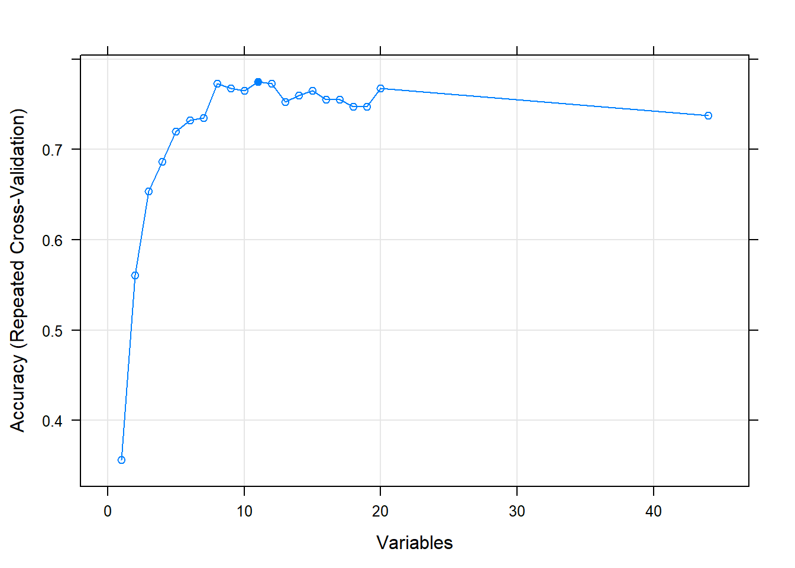
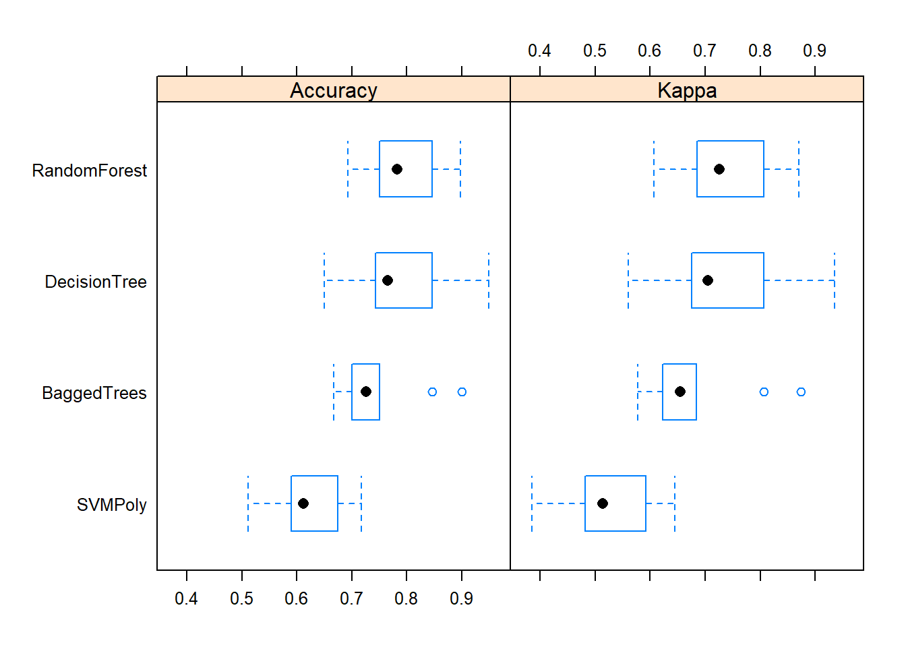
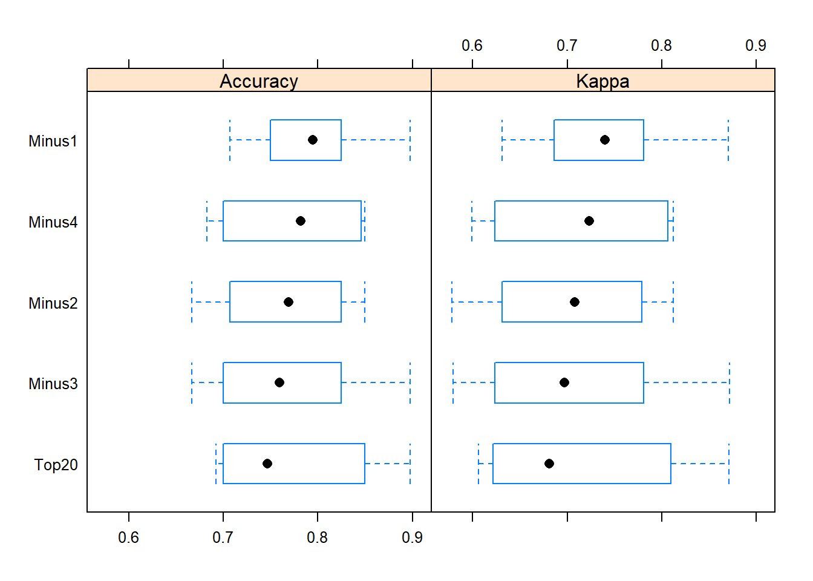

Machine Learning Modeling of Selected Weight-lifting Activites
Antonio Rubiera
11/21/2019
Summary of this Analysis
In this analysis, we evaluate the data used by Velloso et al. in their paper “Qualitative Activity Recognition of Weight Lifting Exercises” [ACM SIGCHI 2013]. The data was collected for six young men performing weight-lifting exercises with a light dumbbell (1.25 KG) using five pre-determined sequences (named as the variable ‘classe’ in the dataset). Sequence A is the correct sequence, and sequences B, C, D, and E are variations of the men performing the weigth-lifting exercise incorrectly. Sequences B, C, D, and E are specific ways to perform the weigth-lifting exercise incorrectly, and this means that the four wrong sequences should be just as separable from each other as they are from A.
We use a specific seed (22) to ensure our data runs are reproducible. We perform exploratory data analysis (EDA), caret model selection, and feature selection in an appendix. The steps relegated to an appendix are as follows:
- Explore the unaggregated training time series data to get a feel for what movements were performed for each sequence, as captured by the classe variable. We plot a small sample of these.
- Explore the aggregated training time series data after selecting only the rows containing these fileds, and removing fields that contain no data, all zeroes and/or all NA values.
- For the aggregated time bin training data, we generate the model accuracy contribution of each feature using the Recursive Feature Elimination (RFE) algorithm. We come up with the features with greater than or equal to 0.75 correlation as features that can be excluded from the classification training algorithms, but none of these fields are found in the test data. Therefore, this selection criteria is not useful in our analysis.
- For the aggregated time bin training data, and using all predictors found in the training data, we apply four models (Decision Tree, Random Forest, Bagged Trees and SVMpoly-short for Support Vector Machines with polynomial kernel) using the caret package to asses the within sample accuracy of predicting the weight-lifting activities using classe as our response variable. We resample from within the training data to obtain confusion matrix results for each caret model.
- For the unaggregated time bin training data, we generate the model accuracy contribution of each feature using the RFE algorithm. We come up with the features with greater than or equal to 0.75 correlation as features that can be excluded from the classification training algorithms. Since some of these fields we want to exclude are found in the test data, we use this knowledge.
- Finally, within the appendix, and for the unaggregated time bin training data, using all predictors found in the training data, we apply the four models we found to have the highest accuracy and kappa measures (Decision Tree, Random Forest, Bagged Trees and SVMpoly), using the caret package to asses the within sample accuracy of predicting the weight-lifting activities using classe as our response variable. We resample here as well from within the training data to obtain confusion matrix results for each caret model.
We estimate in-sample error using the model’s accuracy when resampling from within the training data, and out-of-sample error using the model’s accuracy when comparing the training data to the test data. All of the percent accuracy numbers quoted in this summary are for a Random Forest model, and we have the same results for three other models (Decision Tree, Bagged Trees and SVMpoly) in the body of the analysis. The estimates for in-sample error using the model’s accuracy are in the appendix, and the estimates for out-of-sample error using the model’s accuracy are in the three cycles of analysis in the main body of this work.
From the appendix, our in-sample error results for the Random Forest model are:
- 77.5 percent when using only the time-aggregated predictors.
- 84.8 percent when using only the unaggregated predictors, for all fields
- 81.8 percent when using only the unaggregated predictors, for all fields minus the highly correlated fields.
After we perform all of the steps previously outlined and contained here in an appendix, we have four caret models we want to apply on the test data in two cycles:
- In the first cycle, we use all predictors. We obtain predictions for classe for the 20 events in the test data. We estimate that the out of sample error will be close to the in-sample error (approximately 84.8 percent mean accuracy for a Random Forest model using the unaggregate time data). We find the mean accuracy for a Random Forest model to be 79.3 percent using all predictors.
- In the second and cycle, we use only the predictors that have less than 0.75 correlation, based on our cross-validation analysis described in the appendix. We expect the out of sample error will be close to the in-sample error (approximately 81.8 percent mean accuracy for a Random Forest model using the unaggregate time data). We find the mean accuracy for a Random Forest model to be 76.0 percent using only the least-correlated predictors. We expected this accuracy to be higher than the accuracy when using all predictors. In the third and last cycle, We find the mean accuracy for a Random Forest model to be 77.3 using only the top 20 least-correlated predictors. We expected this accuracy to be higher than the accuracy when using all predictors. We subtract one predictor at a time for four additional accuracy measurements and find that the accuracy is 78.8 percent minus one predictor, 76.8 percent minus two predictors, 76.8 percent minus three predictors, and 77.3 percent minus four predictors.
From these three cycles of analysis, our out-of-sample error results for the Random Forest model are:
- 79.3 percent when using only the unaggregated predictors, for all fields
- 76.0 percent when using only the unaggregated predictors, for all fields minus the highly correlated fields. -Within the range between 76.8 percent and 78.8 percent when using only the top 20 unaggregated predictors, and subtracting one field at a time based on the accuracy results of the top 20 model four times.
Analysis Conclusion
We present our conclusion here for the benefit of the Coursera graders. The rest of this analysis has all of the supporting work for this conclusion. We find the in-sample error to be slightly lower than the out-of-sample error. We also find all of the error measurements, using model accuracy as a proxy, to be in the range from the higher 70s percents to the lower 80s percents. Our predictor selection did not change the accuracy results significantly. We attribute this result to a high level of noise in the data, and many missing fields.
library(tidyverse)
library(caret)
library(knitr)
set.seed(22)Time Series (Not Aggregated over Time) Data
The training dataset has two types of data: a time series dataset, and time window measurements of this time series data. Here is the time series data. The measurements in this data for sensors located at the belt, arm (glove), forearm, and dumbbell are:
- The Euler angles (roll, pitch, yaw)
- Gyroscope measurement (x,y,z)
- Magnetometer measurement (x,y,z)
- Acceleration measurement (x,y,z)
training_all <- read.csv("./data/pml-training.csv")
training_all_data <- select(training_all, c("user_name",
"raw_timestamp_part_1","raw_timestamp_part_2",
"cvtd_timestamp","new_window","num_window","roll_belt",
"pitch_belt","yaw_belt","total_accel_belt","gyros_belt_x",
"gyros_belt_y","gyros_belt_z","accel_belt_x","accel_belt_y",
"accel_belt_z","magnet_belt_x","magnet_belt_y",
"magnet_belt_z","roll_arm","pitch_arm","yaw_arm",
"total_accel_arm","gyros_arm_x","gyros_arm_y",
"gyros_arm_z","accel_arm_x","accel_arm_y","accel_arm_z",
"magnet_arm_x","magnet_arm_y","magnet_arm_z","roll_dumbbell",
"pitch_dumbbell","yaw_dumbbell","total_accel_dumbbell",
"gyros_dumbbell_x","gyros_dumbbell_y","gyros_dumbbell_z",
"accel_dumbbell_x","accel_dumbbell_y","accel_dumbbell_z", "magnet_dumbbell_x","magnet_dumbbell_y","magnet_dumbbell_z",
"roll_forearm","pitch_forearm","yaw_forearm",
"total_accel_forearm","gyros_forearm_x",
"gyros_forearm_y","gyros_forearm_z","accel_forearm_x",
"accel_forearm_y","accel_forearm_z","magnet_forearm_x",
"magnet_forearm_y","magnet_forearm_z","classe"))Here are the counts by user_name and classe for the time series data.
kable(table(training_all_data$user_name, training_all_data$classe))| A | B | C | D | E | |
|---|---|---|---|---|---|
| adelmo | 1165 | 776 | 750 | 515 | 686 |
| carlitos | 834 | 690 | 493 | 486 | 609 |
| charles | 899 | 745 | 539 | 642 | 711 |
| eurico | 865 | 592 | 489 | 582 | 542 |
| jeremy | 1177 | 489 | 652 | 522 | 562 |
| pedro | 640 | 505 | 499 | 469 | 497 |
Predicting Classe for the Test Data for all Predictors (First Analysis Cycle)
We relegate the explotary data analysis, and running various caret models on resampled training data to an appendix. From this analysis, we determine that four types of models should yield the most accuate results:
- Random Forests (method=“rf” in caret train function)
- Decision Trees (method=“C5.0” in caret train function)
- Bagged Trees (method=“treebag” in caret train function)
- SVM Poly, short for Least Squares Support Vector Machines with Polynomial Kernel (method=“svmPoly” in caret train function)
We run on these four models to make our predictions for which classe was performed for the twenty data records collected in the test data. We first need to select the complete observations fields in the test data to match fields in the training data. We save a copy of all of the non-aggregated columns in the training data (training_nonblanks_cv) for a cross-validation analysis enclosed here as an appendix.
training_all_clean <- read.csv("./data/pml-training.csv",
na.strings = c("NA","NaN","","#DIV/0!"))
training_nonblanks_clean <- filter(training_all_clean, kurtosis_roll_belt != "")
training_nonblanks_clean <- mutate(training_nonblanks_clean,
rel_time = as.numeric(paste(raw_timestamp_part_1,
raw_timestamp_part_2,sep=".")))
training_nonblanks_clean <- select(training_nonblanks_clean,
c("roll_belt", "pitch_belt", "yaw_belt", "total_accel_belt",
"gyros_belt_x", "gyros_belt_y", "gyros_belt_z", "accel_belt_x",
"accel_belt_y", "accel_belt_z", "magnet_belt_x",
"magnet_belt_y", "magnet_belt_z", "roll_arm", "pitch_arm", "yaw_arm",
"accel_belt_y", "accel_belt_z", "magnet_belt_x",
"magnet_arm_y", "magnet_arm_z", "roll_dumbbell", "pitch_dumbbell", "yaw_dumbbell",
"total_accel_dumbbell", "gyros_dumbbell_x", "gyros_dumbbell_y",
"gyros_dumbbell_z", "accel_dumbbell_x", "accel_dumbbell_y",
"accel_dumbbell_z", "magnet_dumbbell_x", "magnet_dumbbell_y",
"magnet_dumbbell_z", "roll_forearm", "pitch_forearm", "yaw_forearm",
"total_accel_forearm", "gyros_forearm_x", "gyros_forearm_y", "gyros_forearm_z",
"accel_forearm_x", "accel_forearm_y",
"accel_forearm_z", "magnet_forearm_x", "magnet_forearm_y",
"magnet_forearm_z", "classe"))
training_blanks_cv <- select(training_all, c("roll_belt",
"pitch_belt","yaw_belt","total_accel_belt","gyros_belt_x",
"gyros_belt_y","gyros_belt_z","accel_belt_x","accel_belt_y",
"accel_belt_z","magnet_belt_x","magnet_belt_y",
"magnet_belt_z","roll_arm","pitch_arm","yaw_arm",
"total_accel_arm","gyros_arm_x","gyros_arm_y",
"gyros_arm_z","accel_arm_x","accel_arm_y","accel_arm_z",
"magnet_arm_x","magnet_arm_y","magnet_arm_z","roll_dumbbell",
"pitch_dumbbell","yaw_dumbbell","total_accel_dumbbell",
"gyros_dumbbell_x","gyros_dumbbell_y","gyros_dumbbell_z",
"accel_dumbbell_x","accel_dumbbell_y","accel_dumbbell_z",
"magnet_dumbbell_x","magnet_dumbbell_y","magnet_dumbbell_z",
"roll_forearm","pitch_forearm","yaw_forearm",
"total_accel_forearm","gyros_forearm_x",
"gyros_forearm_y","gyros_forearm_z","accel_forearm_x",
"accel_forearm_y","accel_forearm_z","magnet_forearm_x",
"magnet_forearm_y","magnet_forearm_z","classe"))Here is the selection of complete observation fields in the test data.
testing_all_clean <- read.csv("./data/pml-testing.csv")
testing_nonblanks_clean <- mutate(testing_all_clean,
rel_time = as.numeric(paste(raw_timestamp_part_1,
raw_timestamp_part_2,sep=".")))
testing_nonblanks_clean <- select(testing_nonblanks_clean,
c("roll_belt", "pitch_belt", "yaw_belt", "total_accel_belt",
"gyros_belt_x", "gyros_belt_y", "gyros_belt_z", "accel_belt_x",
"accel_belt_y", "accel_belt_z", "magnet_belt_x",
"magnet_belt_y", "magnet_belt_z", "roll_arm", "pitch_arm", "yaw_arm",
"accel_belt_y", "accel_belt_z", "magnet_belt_x",
"magnet_belt_y", "magnet_belt_z", "roll_arm", "pitch_arm", "yaw_arm",
"magnet_arm_y", "magnet_arm_z", "roll_dumbbell", "pitch_dumbbell", "yaw_dumbbell",
"total_accel_dumbbell", "gyros_dumbbell_x", "gyros_dumbbell_y",
"gyros_dumbbell_z", "accel_dumbbell_x", "accel_dumbbell_y",
"accel_dumbbell_z", "magnet_dumbbell_x", "magnet_dumbbell_y",
"magnet_dumbbell_z", "roll_forearm", "pitch_forearm", "yaw_forearm",
"total_accel_forearm", "gyros_forearm_x", "gyros_forearm_y", "gyros_forearm_z",
"accel_forearm_x", "accel_forearm_y",
"accel_forearm_z", "magnet_forearm_x", "magnet_forearm_y",
"magnet_forearm_z", "problem_id"))We setup a resampling control function that we will insert into each model. We use cross validation using a random forest repeated three times.
set.seed(22)
controlTS <- rfeControl(functions=rfFuncs, method="repeatedcv", number=3)We find the fields with the highest correlation factor, setting our threshold at 0.75 correlation.
set.seed(22)
correlationMatrixTS <- cor(training_nonblanks_clean[,1:44], use="complete.obs")
highlyCorrelatedTS75 <- findCorrelation(correlationMatrixTS, cutoff=0.75)
names(training_nonblanks_clean[,highlyCorrelatedTS75])## [1] "accel_belt_z" "accel_dumbbell_z" "roll_belt"
## [4] "accel_belt_y" "accel_belt_x" "total_accel_belt"
## [7] "magnet_belt_x" "accel_dumbbell_y" "magnet_dumbbell_y"
## [10] "magnet_dumbbell_x" "accel_dumbbell_x" "accel_forearm_y"
## [13] "magnet_arm_z"We use the data with all predictors to perform feature selection using the rfe function in caret. This function performs a simple backwards selection, known as recursive feature elimination (RFE). It finds the model accuracy and kappa for all predictors, and subtracts each least contributing predictor one at a time for the number of predictors we ask (20) out of all predictors.
set.seed(22)
resultsTS <- rfe(training_nonblanks_clean[,1:44],
training_nonblanks_clean$classe, sizes=c(1:20), rfeControl=controlTS)
print(resultsTS)##
## Recursive feature selection
##
## Outer resampling method: Cross-Validated (3 fold, repeated 1 times)
##
## Resampling performance over subset size:
##
## Variables Accuracy Kappa AccuracySD KappaSD Selected
## 1 0.3561 0.1847 0.020044 0.030534
## 2 0.5606 0.4446 0.053030 0.065514
## 3 0.6540 0.5620 0.008748 0.011174
## 4 0.6869 0.6049 0.024353 0.031322
## 5 0.7197 0.6470 0.007576 0.008322
## 6 0.7323 0.6636 0.004374 0.006813
## 7 0.7348 0.6670 0.053030 0.067660
## 8 0.7727 0.7145 0.067335 0.084956
## 9 0.7677 0.7081 0.073580 0.092997
## 10 0.7652 0.7044 0.045455 0.057634
## 11 0.7753 0.7168 0.063081 0.080125 *
## 12 0.7727 0.7137 0.040087 0.050924
## 13 0.7525 0.6882 0.065316 0.082691
## 14 0.7601 0.6979 0.038876 0.049053
## 15 0.7652 0.7039 0.053030 0.066897
## 16 0.7551 0.6914 0.031540 0.040084
## 17 0.7551 0.6912 0.017495 0.022310
## 18 0.7475 0.6815 0.024353 0.030997
## 19 0.7475 0.6815 0.037370 0.047450
## 20 0.7677 0.7072 0.023144 0.029161
## 44 0.7374 0.6687 0.050442 0.063300
##
## The top 5 variables (out of 11):
## roll_belt, magnet_dumbbell_y, magnet_dumbbell_z, pitch_forearm, magnet_belt_yHere are the most relevant predictors and a plot of the model accuracy (for a Random Forest) as the RFE algorithm subtracts one predictor at a time from the model. By the eight predictor remove, we have model accuracy in the upper 70s percents, where it remains when additional predictors are removed from the model.
set.seed(22)
predictors(resultsTS)## [1] "roll_belt" "magnet_dumbbell_y" "magnet_dumbbell_z"
## [4] "pitch_forearm" "magnet_belt_y" "roll_dumbbell"
## [7] "yaw_belt" "roll_forearm" "magnet_belt_z"
## [10] "accel_dumbbell_y" "accel_belt_z"plot(resultsTS, type=c("g", "o"))
Running four caret models on all predictors.
We run the training model on the test data for Random Forest (all fields).
set.seed(22)
TcontrolTS <- trainControl(method="repeatedcv", number=10)
modelTSrf <- train(factor(classe) ~ ., data=training_nonblanks_clean,
method="rf", preProcess=c("scale","center"),
trControl=TcontrolTS, na.action=na.pass)
print(modelTSrf)## Random Forest
##
## 396 samples
## 44 predictor
## 5 classes: 'A', 'B', 'C', 'D', 'E'
##
## Pre-processing: scaled (44), centered (44)
## Resampling: Cross-Validated (10 fold, repeated 1 times)
## Summary of sample sizes: 356, 357, 355, 356, 356, 357, ...
## Resampling results across tuning parameters:
##
## mtry Accuracy Kappa
## 2 0.7931707 0.7390597
## 23 0.7731004 0.7146894
## 44 0.7602861 0.6987667
##
## Accuracy was used to select the optimal model using the largest value.
## The final value used for the model was mtry = 2.importanceTSrf <- varImp(modelTSrf, scale=TRUE)
print(importanceTSrf)## rf variable importance
##
## only 20 most important variables shown (out of 44)
##
## Overall
## roll_belt 100.00
## magnet_dumbbell_y 73.31
## roll_dumbbell 64.57
## magnet_dumbbell_z 63.37
## pitch_forearm 62.92
## magnet_belt_y 62.33
## yaw_belt 61.41
## accel_dumbbell_y 51.72
## magnet_dumbbell_x 51.36
## magnet_belt_z 50.39
## accel_belt_z 47.09
## pitch_belt 42.66
## roll_forearm 41.65
## accel_dumbbell_x 40.87
## magnet_arm_y 39.33
## gyros_dumbbell_y 38.39
## pitch_dumbbell 37.81
## accel_forearm_x 37.16
## yaw_dumbbell 33.74
## magnet_forearm_x 31.29We predict the classe for the testing data using a Random Forest model.
predictrf <- predict(modelTSrf,newdata=testing_nonblanks_clean)
predictrf## [1] A A C A A E D B A A B C A A E E A B A B
## Levels: A B C D EWe run the training model on the test data for Decision Trees (all fields).
set.seed(22)
modelTSC50 <- train(factor(classe) ~ ., data=training_nonblanks_clean,
method="C5.0", preProcess=c("scale","center"),
trControl=TcontrolTS, na.action=na.pass)
print(modelTSC50)## C5.0
##
## 396 samples
## 44 predictor
## 5 classes: 'A', 'B', 'C', 'D', 'E'
##
## Pre-processing: scaled (44), centered (44)
## Resampling: Cross-Validated (10 fold, repeated 1 times)
## Summary of sample sizes: 356, 357, 355, 356, 356, 357, ...
## Resampling results across tuning parameters:
##
## model winnow trials Accuracy Kappa
## rules FALSE 1 0.6690619 0.5832499
## rules FALSE 10 0.7574656 0.6951062
## rules FALSE 20 0.7774078 0.7198931
## rules TRUE 1 0.6845716 0.6011889
## rules TRUE 10 0.7525907 0.6883573
## rules TRUE 20 0.7829206 0.7267811
## tree FALSE 1 0.6517480 0.5622097
## tree FALSE 10 0.7400876 0.6733153
## tree FALSE 20 0.7577251 0.6946938
## tree TRUE 1 0.6867573 0.6053352
## tree TRUE 10 0.7652189 0.7049119
## tree TRUE 20 0.7601579 0.6976638
##
## Accuracy was used to select the optimal model using the largest value.
## The final values used for the model were trials = 20, model = rules
## and winnow = TRUE.importanceTSC50 <- varImp(modelTSC50, scale=TRUE)
print(importanceTSC50)## C5.0 variable importance
##
## only 20 most important variables shown (out of 44)
##
## Overall
## pitch_forearm 100.00
## roll_dumbbell 100.00
## magnet_dumbbell_y 100.00
## roll_belt 100.00
## yaw_arm 100.00
## gyros_belt_x 100.00
## magnet_dumbbell_z 99.49
## accel_dumbbell_x 99.24
## gyros_belt_z 98.48
## roll_forearm 98.23
## yaw_belt 97.22
## total_accel_belt 96.72
## magnet_arm_y 93.94
## gyros_belt_y 92.17
## magnet_belt_z 90.15
## yaw_dumbbell 89.65
## magnet_forearm_y 77.02
## yaw_forearm 60.86
## total_accel_forearm 0.00
## accel_forearm_y 0.00We predict the classe for the testing data using a Decision Trees model.
predictC50 <- predict(modelTSC50,newdata=testing_nonblanks_clean)
predictC50## [1] C A B A A E C B A A B C A A E E A D A B
## Levels: A B C D EWe run the training model on the test data for Bagged Trees (all fields).
set.seed(22)
modelTStreebag <- train(factor(classe) ~ ., data=training_nonblanks_clean,
method="treebag", preProcess=c("scale","center"),
trControl=TcontrolTS, na.action=na.pass)
print(modelTStreebag)## Bagged CART
##
## 396 samples
## 44 predictor
## 5 classes: 'A', 'B', 'C', 'D', 'E'
##
## Pre-processing: scaled (44), centered (44)
## Resampling: Cross-Validated (10 fold, repeated 1 times)
## Summary of sample sizes: 356, 357, 355, 356, 356, 357, ...
## Resampling results:
##
## Accuracy Kappa
## 0.7423984 0.6755765importanceTStreebag <- varImp(modelTStreebag, scale=TRUE)
print(importanceTStreebag)## treebag variable importance
##
## only 20 most important variables shown (out of 44)
##
## Overall
## roll_belt 100.00
## pitch_forearm 86.47
## magnet_dumbbell_y 73.72
## yaw_belt 70.86
## roll_dumbbell 66.45
## pitch_belt 63.40
## magnet_belt_y 57.88
## roll_forearm 56.67
## magnet_dumbbell_z 51.86
## accel_dumbbell_y 49.95
## accel_belt_z 47.08
## roll_arm 40.50
## magnet_belt_z 39.14
## total_accel_belt 35.95
## magnet_arm_y 34.59
## gyros_dumbbell_y 34.19
## gyros_belt_z 23.43
## accel_belt_x 23.09
## yaw_dumbbell 22.04
## pitch_dumbbell 21.94We predict the classe for the testing data using a Bagged Trees model.
predicttreebag <- predict(modelTStreebag,newdata=testing_nonblanks_clean)
predicttreebag## [1] C A B A A C D B A A B C A A D A A D D B
## Levels: A B C D EWe run the training model on the test data for SVM Polynomial Kernel (all fields).
set.seed(22)
modelTSsvmPoly <- train(factor(classe) ~ ., data=training_nonblanks_clean,
method="svmPoly", preProcess=c("scale","center"),
trControl=TcontrolTS, na.action=na.pass)
print(modelTSsvmPoly)## Support Vector Machines with Polynomial Kernel
##
## 396 samples
## 44 predictor
## 5 classes: 'A', 'B', 'C', 'D', 'E'
##
## Pre-processing: scaled (44), centered (44)
## Resampling: Cross-Validated (10 fold, repeated 1 times)
## Summary of sample sizes: 356, 357, 355, 356, 356, 357, ...
## Resampling results across tuning parameters:
##
## degree scale C Accuracy Kappa
## 1 0.001 0.25 0.2626626 0.00000000
## 1 0.001 0.50 0.2626626 0.00000000
## 1 0.001 1.00 0.2626626 0.00000000
## 1 0.010 0.25 0.3058677 0.06500791
## 1 0.010 0.50 0.3359991 0.11948811
## 1 0.010 1.00 0.4395372 0.27872584
## 1 0.100 0.25 0.5025657 0.36668396
## 1 0.100 0.50 0.5380206 0.41325553
## 1 0.100 1.00 0.5707802 0.45502812
## 2 0.001 0.25 0.2626626 0.00000000
## 2 0.001 0.50 0.2626626 0.00000000
## 2 0.001 1.00 0.2956113 0.04894040
## 2 0.010 0.25 0.3537555 0.14436162
## 2 0.010 0.50 0.4753064 0.32689783
## 2 0.010 1.00 0.5205754 0.38958994
## 2 0.100 0.25 0.5992933 0.49411804
## 2 0.100 0.50 0.6091041 0.50693624
## 2 0.100 1.00 0.6268605 0.52979704
## 3 0.001 0.25 0.2626626 0.00000000
## 3 0.001 0.50 0.2852298 0.03234755
## 3 0.001 1.00 0.3259991 0.09430106
## 3 0.010 0.25 0.4778064 0.32878475
## 3 0.010 0.50 0.5383286 0.41127349
## 3 0.010 1.00 0.5989181 0.49071283
## 3 0.100 0.25 0.6212992 0.52300533
## 3 0.100 0.50 0.6188024 0.51953947
## 3 0.100 1.00 0.6213024 0.52254627
##
## Accuracy was used to select the optimal model using the largest value.
## The final values used for the model were degree = 2, scale = 0.1 and C = 1.importanceTSsvmPoly <- varImp(modelTSsvmPoly, scale=TRUE)
print(importanceTSsvmPoly)## ROC curve variable importance
##
## variables are sorted by maximum importance across the classes
## only 20 most important variables shown (out of 44)
##
## A B C D E
## pitch_forearm 42.658 100.000 41.00 41.00 100.000
## pitch_dumbbell 43.029 33.469 33.47 75.58 43.029
## roll_dumbbell 46.368 54.198 40.51 73.91 54.198
## magnet_dumbbell_y 68.532 68.532 68.53 71.52 32.182
## magnet_belt_y 10.593 15.791 69.01 10.59 15.791
## magnet_dumbbell_x 58.991 58.991 58.99 66.64 53.058
## roll_belt 9.013 25.320 64.60 18.58 25.320
## magnet_forearm_x 33.265 64.309 35.25 23.76 64.309
## magnet_arm_y 17.261 63.169 55.73 25.17 63.169
## accel_forearm_x 23.724 61.496 24.23 23.72 61.496
## magnet_arm_z 45.204 45.204 60.83 45.20 34.389
## accel_dumbbell_x 37.039 37.039 37.04 59.68 31.164
## magnet_dumbbell_z 54.555 41.396 55.77 25.32 54.555
## magnet_belt_z 11.045 11.045 48.47 11.04 7.939
## pitch_arm 22.288 35.043 46.65 23.84 35.043
## accel_dumbbell_y 34.958 25.509 25.51 45.73 34.958
## accel_belt_z 12.229 7.960 45.03 14.78 12.229
## total_accel_forearm 21.877 21.877 42.92 21.88 19.719
## yaw_dumbbell 24.591 6.839 19.14 42.67 24.591
## accel_dumbbell_z 23.334 23.334 23.33 38.53 12.693We predict the classe for the testing data using a SVM Polynomial Kernel model.
predictsvmPoly <- predict(modelTSsvmPoly,newdata=testing_nonblanks_clean)
predictsvmPoly## [1] A B B C A E D B A A B C A A E E A B D B
## Levels: A B C D EWe resample the accuracy and kappa of the four models for all predictors.
set.seed(22)
allModelsall <- resamples(list(SVMPoly=modelTSsvmPoly,
DecisionTree=modelTSC50,
RandomForest=modelTSrf,
BaggedTrees=modelTStreebag
))
summary(allModelsall)##
## Call:
## summary.resamples(object = allModelsall)
##
## Models: SVMPoly, DecisionTree, RandomForest, BaggedTrees
## Number of resamples: 10
##
## Accuracy
## Min. 1st Qu. Median Mean 3rd Qu. Max.
## SVMPoly 0.5121951 0.5923077 0.6125000 0.6268605 0.6729167 0.7179487
## DecisionTree 0.6500000 0.7435897 0.7652439 0.7829206 0.8408654 0.9487179
## RandomForest 0.6923077 0.7500000 0.7820513 0.7931707 0.8408654 0.8974359
## BaggedTrees 0.6666667 0.7000000 0.7254534 0.7423984 0.7483974 0.9000000
## NA's
## SVMPoly 0
## DecisionTree 0
## RandomForest 0
## BaggedTrees 0
##
## Kappa
## Min. 1st Qu. Median Mean 3rd Qu. Max.
## SVMPoly 0.3853073 0.4843116 0.5138236 0.5297970 0.5897107 0.6448675
## DecisionTree 0.5600943 0.6758045 0.7050385 0.7267811 0.7999367 0.9355372
## RandomForest 0.6073826 0.6851004 0.7253866 0.7390597 0.7997640 0.8706468
## BaggedTrees 0.5775000 0.6226408 0.6540560 0.6755765 0.6823880 0.8740157
## NA's
## SVMPoly 0
## DecisionTree 0
## RandomForest 0
## BaggedTrees 0Here is a box plot of the accuracy for the four models we attempted for all predictors.
bwplot(allModelsall)
Here are the predictions for the classe of the test data for the four models for all predictors.
require(knitr)
predictTableall <- cbind(testing_nonblanks_clean$problem_id,
predictrf,predictC50,predicttreebag,predictsvmPoly)
kable(predictTableall)| predictrf | predictC50 | predicttreebag | predictsvmPoly | |
|---|---|---|---|---|
| 1 | 1 | 3 | 3 | 1 |
| 2 | 1 | 1 | 1 | 2 |
| 3 | 3 | 2 | 2 | 2 |
| 4 | 1 | 1 | 1 | 3 |
| 5 | 1 | 1 | 1 | 1 |
| 6 | 5 | 5 | 3 | 5 |
| 7 | 4 | 3 | 4 | 4 |
| 8 | 2 | 2 | 2 | 2 |
| 9 | 1 | 1 | 1 | 1 |
| 10 | 1 | 1 | 1 | 1 |
| 11 | 2 | 2 | 2 | 2 |
| 12 | 3 | 3 | 3 | 3 |
| 13 | 1 | 1 | 1 | 1 |
| 14 | 1 | 1 | 1 | 1 |
| 15 | 5 | 5 | 4 | 5 |
| 16 | 5 | 5 | 1 | 5 |
| 17 | 1 | 1 | 1 | 1 |
| 18 | 2 | 4 | 4 | 2 |
| 19 | 1 | 1 | 4 | 4 |
| 20 | 2 | 2 | 2 | 2 |
Predicting Classe for the Test Data for the top 20 and fewer Predictors (Third Analysis Cycle)
We run the training model on the test data for Random Forest (top 20 least correlated fields).
set.seed(22)
modelTSselrftop20 <- train(factor(classe) ~ roll_dumbbell + magnet_belt_y +
yaw_belt + pitch_forearm + magnet_dumbbell_z +
magnet_belt_z + accel_belt_z + gyros_dumbbell_y +
pitch_dumbbell + pitch_belt + yaw_dumbbell + magnet_arm_y + roll_forearm + magnet_forearm_x + roll_arm +
accel_forearm_x + accel_forearm_z + magnet_forearm_y + magnet_belt_x + magnet_forearm_z ,
data=training_nonblanks_clean,
method="rf", preProcess=c("scale","center"),
trControl=TcontrolTS, na.action=na.pass)
importanceTSselrftop20 <- varImp(modelTSselrftop20, scale=TRUE)
print(importanceTSselrftop20)## rf variable importance
##
## Overall
## magnet_dumbbell_z 100.000
## yaw_belt 97.557
## roll_dumbbell 97.212
## magnet_belt_y 96.452
## pitch_forearm 81.557
## magnet_belt_z 74.519
## accel_belt_z 68.152
## pitch_belt 58.132
## yaw_dumbbell 43.605
## gyros_dumbbell_y 42.781
## roll_forearm 42.063
## pitch_dumbbell 30.228
## magnet_arm_y 27.365
## roll_arm 23.995
## accel_forearm_x 13.107
## magnet_forearm_x 13.030
## magnet_forearm_z 10.435
## accel_forearm_z 7.662
## magnet_belt_x 5.096
## magnet_forearm_y 0.000predictselrftop20 <- predict(modelTSselrftop20,newdata=testing_nonblanks_clean)
predictselrftop20## [1] A A B A A E D B A A B C B A E E A B A B
## Levels: A B C D EFirst subtraction: stepwise, we are getting rid of predictors one by one; magnet_forearm_y, with a 0.000 percent contribution to the accuracy.
set.seed(22)
modelTSselrfminus1 <- train(factor(classe) ~ roll_dumbbell + magnet_belt_y +
yaw_belt + pitch_forearm + magnet_dumbbell_z +
magnet_belt_z + accel_belt_z + gyros_dumbbell_y +
pitch_dumbbell + pitch_belt + yaw_dumbbell + magnet_arm_y + roll_forearm + magnet_forearm_x + roll_arm +
accel_forearm_x + accel_forearm_z + magnet_belt_x + magnet_forearm_z ,
data=training_nonblanks_clean,
method="rf", preProcess=c("scale","center"),
trControl=TcontrolTS, na.action=na.pass)
importanceTSselrfminus1 <- varImp(modelTSselrfminus1, scale=TRUE)
print(importanceTSselrfminus1)## rf variable importance
##
## Overall
## yaw_belt 100.000
## pitch_forearm 89.795
## roll_dumbbell 87.423
## magnet_dumbbell_z 84.304
## magnet_belt_y 82.467
## magnet_belt_z 71.185
## accel_belt_z 62.075
## pitch_belt 45.859
## gyros_dumbbell_y 43.176
## yaw_dumbbell 34.095
## magnet_arm_y 28.918
## roll_forearm 25.489
## pitch_dumbbell 23.673
## roll_arm 18.224
## accel_forearm_x 9.664
## magnet_forearm_z 7.408
## accel_forearm_z 2.806
## magnet_forearm_x 2.555
## magnet_belt_x 0.000predictselrfminus1 <- predict(modelTSselrfminus1,newdata=testing_nonblanks_clean)
predictselrfminus1## [1] A A B A A E D B A A B C A A E E A B A B
## Levels: A B C D ESecond subtraction: stepwise, we are getting rid of predictors one by one; accel_forearm_z, with a 4.376 percent importance to the accuracy.
set.seed(22)
modelTSselrfminus2 <- train(factor(classe) ~ roll_dumbbell + magnet_belt_y +
yaw_belt + pitch_forearm + magnet_dumbbell_z +
magnet_belt_z + accel_belt_z + gyros_dumbbell_y +
pitch_dumbbell + pitch_belt + yaw_dumbbell + magnet_arm_y + roll_forearm + magnet_forearm_x + roll_arm +
accel_forearm_x + magnet_belt_x + magnet_forearm_z ,
data=training_nonblanks_clean,
method="rf", preProcess=c("scale","center"),
trControl=TcontrolTS, na.action=na.pass)
importanceTSselrfminus2 <- varImp(modelTSselrfminus2, scale=TRUE)
print(importanceTSselrfminus2)## rf variable importance
##
## Overall
## yaw_belt 100.000
## magnet_belt_y 86.918
## magnet_dumbbell_z 81.400
## roll_dumbbell 80.387
## pitch_forearm 72.762
## magnet_belt_z 65.651
## pitch_belt 47.921
## gyros_dumbbell_y 41.967
## yaw_dumbbell 41.868
## accel_belt_z 40.981
## pitch_dumbbell 35.073
## roll_forearm 30.838
## roll_arm 19.465
## magnet_arm_y 17.216
## magnet_forearm_x 11.331
## magnet_forearm_z 7.417
## accel_forearm_x 4.640
## magnet_belt_x 0.000predictselrfminus2 <- predict(modelTSselrfminus2,newdata=testing_nonblanks_clean)
predictselrfminus2## [1] A A B A A E D B A A B C B A E E A B A B
## Levels: A B C D EThird subtraction: stepwise, we are getting rid of predictors one by one; accel_forearm_z, with a 4.376 percent importance to the accuracy.
Stepwise getting rid of predictors one by one: magnet_belt_x 6.859 3
set.seed(22)
modelTSselrfminus3 <- train(factor(classe) ~ roll_dumbbell + magnet_belt_y +
yaw_belt + pitch_forearm + magnet_dumbbell_z +
magnet_belt_z + accel_belt_z + gyros_dumbbell_y +
pitch_dumbbell + pitch_belt + yaw_dumbbell + magnet_arm_y + roll_forearm + magnet_forearm_x + roll_arm +
accel_forearm_x + magnet_forearm_z,
data=training_nonblanks_clean,
method="rf", preProcess=c("scale","center"),
trControl=TcontrolTS, na.action=na.pass)
importanceTSselrfminus3 <- varImp(modelTSselrfminus3, scale=TRUE)
print(importanceTSselrfminus3)## rf variable importance
##
## Overall
## roll_dumbbell 100.000
## pitch_forearm 93.252
## yaw_belt 91.054
## magnet_dumbbell_z 84.720
## magnet_belt_y 80.145
## magnet_belt_z 71.345
## accel_belt_z 65.831
## pitch_belt 42.531
## gyros_dumbbell_y 41.001
## yaw_dumbbell 32.930
## magnet_arm_y 29.719
## roll_forearm 26.266
## pitch_dumbbell 20.464
## roll_arm 8.924
## magnet_forearm_z 7.284
## magnet_forearm_x 6.584
## accel_forearm_x 0.000predictselrfminus3 <- predict(modelTSselrfminus3,newdata=testing_nonblanks_clean)
predictselrfminus3## [1] C A B A A E D B A A B C A A E E A B A B
## Levels: A B C D EFourth, and final subtraction: stepwise, we are getting rid of predictors one by one; magnet_forearm_z, with a 10.501 percent importance to the accuracy.
set.seed(22)
modelTSselrfminus4 <- train(factor(classe) ~ roll_dumbbell + magnet_belt_y +
yaw_belt + pitch_forearm + magnet_dumbbell_z +
magnet_belt_z + accel_belt_z + gyros_dumbbell_y +
pitch_dumbbell + pitch_belt + yaw_dumbbell + magnet_arm_y + roll_forearm + magnet_forearm_x + roll_arm +
accel_forearm_x,
data=training_nonblanks_clean,
method="rf", preProcess=c("scale","center"),
trControl=TcontrolTS, na.action=na.pass)
importanceTSselrfminus4 <- varImp(modelTSselrfminus4, scale=TRUE)
print(importanceTSselrfminus4)## rf variable importance
##
## Overall
## yaw_belt 100.00
## magnet_dumbbell_z 90.93
## roll_dumbbell 84.44
## pitch_forearm 81.48
## magnet_belt_y 78.34
## accel_belt_z 59.86
## pitch_belt 55.52
## magnet_belt_z 54.97
## gyros_dumbbell_y 38.90
## roll_forearm 34.97
## yaw_dumbbell 31.54
## magnet_arm_y 31.25
## pitch_dumbbell 24.15
## roll_arm 14.75
## accel_forearm_x 10.63
## magnet_forearm_x 0.00predictselrfminus4 <- predict(modelTSselrfminus4,newdata=testing_nonblanks_clean)
predictselrfminus4## [1] A A B A A E D B A A B C A A E E A B A B
## Levels: A B C D EHere are the predictions for the classe of the test data for the four models for the top 20 predictors and four stepwise subtractions.
require(knitr)
predictTable2 <- cbind(testing_nonblanks_clean$problem_id,predictselrftop20,
predictselrfminus1,predictselrfminus2,predictselrfminus3,
predictselrfminus4)
kable(predictTable2)| predictselrftop20 | predictselrfminus1 | predictselrfminus2 | predictselrfminus3 | predictselrfminus4 | |
|---|---|---|---|---|---|
| 1 | 1 | 1 | 1 | 3 | 1 |
| 2 | 1 | 1 | 1 | 1 | 1 |
| 3 | 2 | 2 | 2 | 2 | 2 |
| 4 | 1 | 1 | 1 | 1 | 1 |
| 5 | 1 | 1 | 1 | 1 | 1 |
| 6 | 5 | 5 | 5 | 5 | 5 |
| 7 | 4 | 4 | 4 | 4 | 4 |
| 8 | 2 | 2 | 2 | 2 | 2 |
| 9 | 1 | 1 | 1 | 1 | 1 |
| 10 | 1 | 1 | 1 | 1 | 1 |
| 11 | 2 | 2 | 2 | 2 | 2 |
| 12 | 3 | 3 | 3 | 3 | 3 |
| 13 | 2 | 1 | 2 | 1 | 1 |
| 14 | 1 | 1 | 1 | 1 | 1 |
| 15 | 5 | 5 | 5 | 5 | 5 |
| 16 | 5 | 5 | 5 | 5 | 5 |
| 17 | 1 | 1 | 1 | 1 | 1 |
| 18 | 2 | 2 | 2 | 2 | 2 |
| 19 | 1 | 1 | 1 | 1 | 1 |
| 20 | 2 | 2 | 2 | 2 | 2 |
We resample the accuracy and kappa for the top 20 predictors and four stepwise subtractions.
set.seed(22)
allModelsselminus <- resamples(list(Top20=modelTSselrftop20,
Minus1=modelTSselrfminus1,
Minus2=modelTSselrfminus2,
Minus3=modelTSselrfminus3,
Minus4=modelTSselrfminus4
))
summary(allModelsselminus)##
## Call:
## summary.resamples(object = allModelsselminus)
##
## Models: Top20, Minus1, Minus2, Minus3, Minus4
## Number of resamples: 10
##
## Accuracy
## Min. 1st Qu. Median Mean 3rd Qu. Max. NA's
## Top20 0.6923077 0.7079268 0.7467949 0.7727861 0.8426282 0.8974359 0
## Minus1 0.7073171 0.7500000 0.7948718 0.7882317 0.8174679 0.8974359 0
## Minus2 0.6666667 0.7117378 0.7692308 0.7679112 0.8238782 0.8500000 0
## Minus3 0.6666667 0.7108974 0.7596154 0.7681004 0.8187500 0.8974359 0
## Minus4 0.6829268 0.7125000 0.7820513 0.7731645 0.8346154 0.8500000 0
##
## Kappa
## Min. 1st Qu. Median Mean 3rd Qu. Max. NA's
## Top20 0.6063919 0.6314705 0.6806494 0.7131094 0.8007175 0.8708609 0
## Minus1 0.6309077 0.6861513 0.7399971 0.7329437 0.7709604 0.8706468 0
## Minus2 0.5782030 0.6369739 0.7081077 0.7075694 0.7779423 0.8119122 0
## Minus3 0.5792531 0.6360571 0.6971267 0.7075566 0.7722108 0.8714992 0
## Minus4 0.5992481 0.6389325 0.7233988 0.7137070 0.7913773 0.8120595 0Here is a box plot of the accuracy for the top 20 predictors and four stepwise subtractions.
bwplot(allModelsselminus)
Appendix: Time Series Exploratory Data Analysis
We zero the time distributions by user_name and by classe. Because each of the thirty time series were collected at different times, each one has to be time-zeroed individually. As an example, we compare the A sequence for two user_names for the roll of the belt measurement.
trg_data <- mutate(training_all_data, rel_time = as.numeric(paste(raw_timestamp_part_1,
raw_timestamp_part_2,sep=".")))
trg_adelmo_A <- filter(trg_data,user_name == "adelmo" & classe == "A")
trg_adelmo_B <- filter(trg_data,user_name == "adelmo" & classe == "B")
trg_adelmo_C <- filter(trg_data,user_name == "adelmo" & classe == "C")
trg_adelmo_D <- filter(trg_data,user_name == "adelmo" & classe == "D")
trg_adelmo_E <- filter(trg_data,user_name == "adelmo" & classe == "E")
trg_data_adelmo_A_left <- mutate(trg_adelmo_A, time_left = rel_time - min(rel_time))
trg_data_adelmo_B_left <- mutate(trg_adelmo_B, time_left = rel_time - min(rel_time))
trg_data_adelmo_C_left <- mutate(trg_adelmo_C, time_left = rel_time - min(rel_time))
trg_data_adelmo_D_left <- mutate(trg_adelmo_D, time_left = rel_time - min(rel_time))
trg_data_adelmo_E_left <- mutate(trg_adelmo_E, time_left = rel_time - min(rel_time))
trg_carlitos_A <- filter(trg_data,user_name == "carlitos" & classe == "A")
trg_carlitos_B <- filter(trg_data,user_name == "carlitos" & classe == "B")
trg_carlitos_C <- filter(trg_data,user_name == "carlitos" & classe == "C")
trg_carlitos_D <- filter(trg_data,user_name == "carlitos" & classe == "D")
trg_carlitos_E <- filter(trg_data,user_name == "carlitos" & classe == "E")
trg_data_carlitos_A_left <- mutate(trg_carlitos_A, time_left = rel_time - min(rel_time))
trg_data_carlitos_B_left <- mutate(trg_carlitos_B, time_left = rel_time - min(rel_time))
trg_data_carlitos_C_left <- mutate(trg_carlitos_C, time_left = rel_time - min(rel_time))
trg_data_carlitos_D_left <- mutate(trg_carlitos_D, time_left = rel_time - min(rel_time))
trg_data_carlitos_E_left <- mutate(trg_carlitos_E, time_left = rel_time - min(rel_time))
trg_charles_A <- filter(trg_data,user_name == "charles" & classe == "A")
trg_charles_B <- filter(trg_data,user_name == "charles" & classe == "B")
trg_charles_C <- filter(trg_data,user_name == "charles" & classe == "C")
trg_charles_D <- filter(trg_data,user_name == "charles" & classe == "D")
trg_charles_E <- filter(trg_data,user_name == "charles" & classe == "E")
trg_data_charles_A_left <- mutate(trg_charles_A, time_left = rel_time - min(rel_time))
trg_data_charles_B_left <- mutate(trg_charles_B, time_left = rel_time - min(rel_time))
trg_data_charles_C_left <- mutate(trg_charles_C, time_left = rel_time - min(rel_time))
trg_data_charles_D_left <- mutate(trg_charles_D, time_left = rel_time - min(rel_time))
trg_data_charles_E_left <- mutate(trg_charles_E, time_left = rel_time - min(rel_time))
trg_eurico_A <- filter(trg_data,user_name == "eurico" & classe == "A")
trg_eurico_B <- filter(trg_data,user_name == "eurico" & classe == "B")
trg_eurico_C <- filter(trg_data,user_name == "eurico" & classe == "C")
trg_eurico_D <- filter(trg_data,user_name == "eurico" & classe == "D")
trg_eurico_E <- filter(trg_data,user_name == "eurico" & classe == "E")
trg_data_eurico_A_left <- mutate(trg_eurico_A, time_left = rel_time - min(rel_time))
trg_data_eurico_B_left <- mutate(trg_eurico_B, time_left = rel_time - min(rel_time))
trg_data_eurico_C_left <- mutate(trg_eurico_C, time_left = rel_time - min(rel_time))
trg_data_eurico_D_left <- mutate(trg_eurico_D, time_left = rel_time - min(rel_time))
trg_data_eurico_E_left <- mutate(trg_eurico_E, time_left = rel_time - min(rel_time))
trg_jeremy_A <- filter(trg_data,user_name == "jeremy" & classe == "A")
trg_jeremy_B <- filter(trg_data,user_name == "jeremy" & classe == "B")
trg_jeremy_C <- filter(trg_data,user_name == "jeremy" & classe == "C")
trg_jeremy_D <- filter(trg_data,user_name == "jeremy" & classe == "D")
trg_jeremy_E <- filter(trg_data,user_name == "jeremy" & classe == "E")
trg_data_jeremy_A_left <- mutate(trg_jeremy_A, time_left = rel_time - min(rel_time))
trg_data_jeremy_B_left <- mutate(trg_jeremy_B, time_left = rel_time - min(rel_time))
trg_data_jeremy_C_left <- mutate(trg_jeremy_C, time_left = rel_time - min(rel_time))
trg_data_jeremy_D_left <- mutate(trg_jeremy_D, time_left = rel_time - min(rel_time))
trg_data_jeremy_E_left <- mutate(trg_jeremy_E, time_left = rel_time - min(rel_time))
trg_pedro_A <- filter(trg_data,user_name == "pedro" & classe == "A")
trg_pedro_B <- filter(trg_data,user_name == "pedro" & classe == "B")
trg_pedro_C <- filter(trg_data,user_name == "pedro" & classe == "C")
trg_pedro_D <- filter(trg_data,user_name == "pedro" & classe == "D")
trg_pedro_E <- filter(trg_data,user_name == "pedro" & classe == "E")
trg_data_pedro_A_left <- mutate(trg_pedro_A, time_left = rel_time - min(rel_time))
trg_data_pedro_B_left <- mutate(trg_pedro_B, time_left = rel_time - min(rel_time))
trg_data_pedro_C_left <- mutate(trg_pedro_C, time_left = rel_time - min(rel_time))
trg_data_pedro_D_left <- mutate(trg_pedro_D, time_left = rel_time - min(rel_time))
trg_data_pedro_E_left <- mutate(trg_pedro_E, time_left = rel_time - min(rel_time))
par(mfrow=c(2,2))
plot(trg_data_adelmo_A_left$time_left,trg_data_adelmo_A_left$roll_belt,
main="Belt Roll for Adelmo", xlab="A sequence (seconds)", ylab="Belt Roll (degrees)")
plot(trg_data_carlitos_A_left$time_left,trg_data_carlitos_A_left$roll_belt,
main="Belt Roll for Carlitos", xlab="A sequence (seconds)", ylab="Belt Roll (degrees)")
plot(trg_data_adelmo_E_left$time_left,trg_data_adelmo_E_left$roll_belt,
main="Belt Roll for Adelmo", xlab="E sequence (seconds)", ylab="Belt Roll (degrees)")
plot(trg_data_carlitos_E_left$time_left,trg_data_carlitos_E_left$roll_belt,
main="Belt Roll for Carlitos", xlab="E sequence (seconds)", ylab="Belt Roll (degrees)")
Appendix: Aggregated Time Bin Exploratory Data Analysis
The aggregated time bin data contains calculated measures from the time bin data in time windows that vary between 0.5 seconds and 2.5 seconds. The Euler angles for sensors located at the belt, arm (glove), forearm, and dumbbell as magnitude quantities for the x,y,z measurements in the time series data are:
- Kurtosis and Skewness.
- Minimum, Maximum, and Average.
- Amplitude.
- Variance and Standard Deviation.
Here are the time window measurements after removal of several columns that only contained zeros or NAs:
- kurtosis_yaw_belt
- skewness_yaw_belt
- kurtosis_yaw_dumbbell
- skewness_yaw_dumbbell
- kurtosis_yaw_forearm
- skewness_yaw_forearm
- amplitude_yaw_dumbbell
- amplitude_yaw_forearm
- amplitude_yaw_belt
training_nonblanks_clean_time <- filter(training_all_clean, kurtosis_roll_belt != "")
training_sdvar_sel_clean_all <- select(training_nonblanks_clean_time,c("user_name",
"classe","raw_timestamp_part_1","raw_timestamp_part_2","cvtd_timestamp",
"new_window","num_window","kurtosis_roll_belt","kurtosis_picth_belt",
"skewness_roll_belt",
"skewness_roll_belt.1","max_roll_belt","max_picth_belt",
"max_yaw_belt","min_roll_belt","min_pitch_belt","min_yaw_belt","amplitude_roll_belt",
"amplitude_pitch_belt","var_total_accel_belt","avg_roll_belt",
"stddev_roll_belt","var_roll_belt","avg_pitch_belt","stddev_pitch_belt","var_pitch_belt",
"avg_yaw_belt","stddev_yaw_belt","var_yaw_belt","var_accel_arm","avg_roll_arm",
"stddev_roll_arm","var_roll_arm","avg_pitch_arm","stddev_pitch_arm","var_pitch_arm",
"avg_yaw_arm","stddev_yaw_arm","var_yaw_arm","kurtosis_roll_arm","kurtosis_picth_arm",
"kurtosis_yaw_arm","skewness_roll_arm","skewness_pitch_arm","skewness_yaw_arm",
"max_roll_arm","max_picth_arm","max_yaw_arm","min_roll_arm","min_pitch_arm",
"min_yaw_arm","amplitude_roll_arm","amplitude_pitch_arm","amplitude_yaw_arm",
"kurtosis_roll_dumbbell","kurtosis_picth_dumbbell",
"skewness_roll_dumbbell","skewness_pitch_dumbbell",
"max_roll_dumbbell","max_picth_dumbbell","max_yaw_dumbbell","min_roll_dumbbell",
"min_pitch_dumbbell","min_yaw_dumbbell","amplitude_roll_dumbbell","amplitude_pitch_dumbbell",
"total_accel_dumbbell","var_accel_dumbbell","avg_roll_dumbbell",
"stddev_roll_dumbbell","var_roll_dumbbell","avg_pitch_dumbbell","stddev_pitch_dumbbell",
"var_pitch_dumbbell","avg_yaw_dumbbell","stddev_yaw_dumbbell","var_yaw_dumbbell",
"kurtosis_roll_forearm","kurtosis_picth_forearm",
"skewness_roll_forearm","skewness_pitch_forearm",
"max_roll_forearm","max_picth_forearm","max_yaw_forearm","min_roll_forearm",
"min_pitch_forearm","min_yaw_forearm","amplitude_roll_forearm","amplitude_pitch_forearm",
"total_accel_forearm","var_accel_forearm","avg_roll_forearm",
"stddev_roll_forearm","var_roll_forearm","avg_pitch_forearm","stddev_pitch_forearm",
"var_pitch_forearm","avg_yaw_forearm","stddev_yaw_forearm","var_yaw_forearm"))Here are the counts by user_name and classe for the time bin data.
kable(table(training_sdvar_sel_clean_all$user_name, training_sdvar_sel_clean_all$classe))| A | B | C | D | E | |
|---|---|---|---|---|---|
| adelmo | 21 | 14 | 13 | 5 | 22 |
| carlitos | 12 | 16 | 8 | 8 | 12 |
| charles | 21 | 16 | 16 | 14 | 14 |
| eurico | 18 | 9 | 7 | 12 | 8 |
| jeremy | 18 | 14 | 16 | 16 | 12 |
| pedro | 14 | 9 | 9 | 11 | 11 |
The relevance of using machine learning for data with many variables is evident when we plot selected variables for the time bin series. There are too many combinations of scatter plots for us to plot and we do not need to. What we need to do is use the functions at our disposal to find the level of correlation between the variables in our data, and subtract those with too high a correlation. We are getting ahead of ourselves with the plots showing below because we will later determine the level of correlation for the variables in our training data, yet it’s worth using that advance knowlegde here to stress the point that the need for a machine learning analysis becomes evident when there is a very large number of correlations that can be calculated from the variables in our data.
Appendix: Time Bin Feature Selection
We generate the correlation matrix for our data, and use it to generate the list of features in our data with pair-wise correlation of 0.75 or greater.
set.seed(22)
training_sdvar_cor <- training_sdvar_sel_clean_all[,8:100]
correlationMatrixSDVAR <- cor(training_sdvar_sel_clean_all[,8:100], use="complete.obs")
highlyCorrelatedSDVAR75 <- findCorrelation(correlationMatrixSDVAR, cutoff=0.75)
names(training_sdvar_cor[,highlyCorrelatedSDVAR75])## [1] "min_pitch_belt" "avg_roll_belt"
## [3] "max_picth_belt" "max_roll_belt"
## [5] "avg_yaw_belt" "min_pitch_dumbbell"
## [7] "amplitude_pitch_dumbbell" "stddev_roll_dumbbell"
## [9] "amplitude_roll_dumbbell" "max_picth_arm"
## [11] "stddev_yaw_dumbbell" "stddev_pitch_dumbbell"
## [13] "amplitude_pitch_arm" "avg_pitch_forearm"
## [15] "stddev_roll_forearm" "avg_yaw_dumbbell"
## [17] "stddev_yaw_arm" "amplitude_pitch_belt"
## [19] "stddev_roll_belt" "amplitude_yaw_arm"
## [21] "stddev_pitch_arm" "kurtosis_roll_forearm"
## [23] "amplitude_roll_arm" "max_yaw_forearm"
## [25] "min_yaw_forearm" "amplitude_pitch_forearm"
## [27] "stddev_pitch_belt" "min_pitch_arm"
## [29] "max_yaw_dumbbell" "min_yaw_dumbbell"
## [31] "amplitude_roll_belt" "amplitude_roll_forearm"
## [33] "stddev_yaw_belt" "stddev_yaw_forearm"
## [35] "stddev_pitch_forearm" "var_roll_belt"
## [37] "kurtosis_picth_dumbbell" "min_roll_arm"
## [39] "max_roll_arm" "var_roll_arm"
## [41] "min_yaw_belt" "kurtosis_roll_belt"We use this list to remove these highly correlated features from the data we will use in our models.
training_sdvar_sel_clean <- select(training_sdvar_sel_clean_all,c("user_name",
"classe","raw_timestamp_part_1","raw_timestamp_part_2","cvtd_timestamp",
"new_window","num_window","kurtosis_roll_belt","skewness_roll_belt",
"skewness_roll_belt.1","min_roll_belt",
"var_roll_belt","avg_pitch_belt","var_pitch_belt",
"var_yaw_belt","var_accel_arm","avg_roll_arm",
"stddev_roll_arm","avg_pitch_arm","var_pitch_arm",
"avg_yaw_arm","var_yaw_arm","kurtosis_roll_arm","kurtosis_picth_arm",
"kurtosis_yaw_arm","skewness_roll_arm","skewness_pitch_arm","skewness_yaw_arm",
"max_yaw_arm","min_yaw_arm","kurtosis_picth_dumbbell",
"skewness_roll_dumbbell","skewness_pitch_dumbbell",
"max_roll_dumbbell","max_picth_dumbbell","min_roll_dumbbell",
"min_yaw_dumbbell","total_accel_dumbbell","var_accel_dumbbell","avg_roll_dumbbell",
"var_roll_dumbbell","avg_pitch_dumbbell","stddev_pitch_dumbbell",
"var_pitch_dumbbell","var_yaw_dumbbell","kurtosis_picth_forearm",
"skewness_roll_forearm","skewness_pitch_forearm",
"max_picth_forearm","min_roll_forearm","min_pitch_forearm",
"total_accel_forearm","var_accel_forearm","avg_roll_forearm","var_roll_forearm",
"var_pitch_forearm","avg_yaw_forearm","var_yaw_forearm"))We then generate the model accuracy contribution of each feature in our data using the Recursive Feature Elimination (RFE) algorithm. This algorithm evaluates the contribution of each feature in steps, beginning with all features. Beginning with the feature that accounts for the least variability in the data, the RFE algorithm removes each feature at a time, and calculates the accuracy of the model with the sequentially reducting list of features.
set.seed(22)
training_sdvar_cor_classe_noNA <- na.omit(training_sdvar_sel_clean)
controlSDVAR2 <- rfeControl(functions=rfFuncs, method="cv", number=10)
resultsSDVAR2 <- rfe(training_sdvar_cor_classe_noNA[,8:58],
training_sdvar_cor_classe_noNA$classe, sizes=c(1:30), rfeControl=controlSDVAR2)
print(resultsSDVAR2)##
## Recursive feature selection
##
## Outer resampling method: Cross-Validated (10 fold)
##
## Resampling performance over subset size:
##
## Variables Accuracy Kappa AccuracySD KappaSD Selected
## 1 0.4638 0.3137 0.13388 0.16593
## 2 0.5273 0.4043 0.13165 0.16254
## 3 0.5870 0.4798 0.09137 0.11497
## 4 0.7335 0.6634 0.11654 0.14695
## 5 0.7757 0.7172 0.11255 0.14228
## 6 0.7562 0.6923 0.08007 0.10144
## 7 0.7958 0.7411 0.10984 0.13931
## 8 0.8138 0.7640 0.08791 0.11205
## 9 0.8049 0.7529 0.09468 0.12050
## 10 0.7915 0.7359 0.09777 0.12441
## 11 0.8006 0.7475 0.10266 0.13060
## 12 0.7906 0.7350 0.07150 0.09022
## 13 0.7954 0.7412 0.08279 0.10429
## 14 0.8041 0.7518 0.07217 0.09165
## 15 0.8170 0.7685 0.06273 0.07966
## 16 0.8095 0.7593 0.07193 0.08981
## 17 0.8188 0.7709 0.07545 0.09423
## 18 0.8225 0.7749 0.06800 0.08670
## 19 0.8219 0.7745 0.07437 0.09502
## 20 0.8225 0.7755 0.05811 0.07271
## 21 0.8086 0.7576 0.06663 0.08423
## 22 0.8179 0.7687 0.07194 0.09202
## 23 0.8269 0.7807 0.05900 0.07419
## 24 0.8267 0.7797 0.06728 0.08676
## 25 0.8213 0.7730 0.06529 0.08381
## 26 0.8267 0.7802 0.07353 0.09378
## 27 0.8302 0.7847 0.06522 0.08384
## 28 0.8311 0.7860 0.06779 0.08556 *
## 29 0.8234 0.7762 0.08594 0.10812
## 30 0.8265 0.7798 0.06845 0.08751
## 51 0.8032 0.7496 0.06628 0.08480
##
## The top 5 variables (out of 28):
## var_roll_belt, min_roll_belt, var_accel_dumbbell, avg_roll_dumbbell, avg_pitch_beltFor our time bin data, these are the best predictors. The accuracy plot shows the accuracy of a model of the data as each least-contributing feature is removed from the model. This procedure is equivalent to a stepwise classification (the case here) or regression analysis of a dataset that goes backwards from the largest number of predictors (features).
predictors(resultsSDVAR2)## [1] "var_roll_belt" "min_roll_belt"
## [3] "var_accel_dumbbell" "avg_roll_dumbbell"
## [5] "avg_pitch_belt" "min_roll_forearm"
## [7] "var_pitch_belt" "var_yaw_belt"
## [9] "avg_pitch_dumbbell" "max_picth_dumbbell"
## [11] "max_roll_dumbbell" "avg_roll_forearm"
## [13] "total_accel_dumbbell" "avg_roll_arm"
## [15] "var_pitch_forearm" "min_roll_dumbbell"
## [17] "max_picth_forearm" "stddev_pitch_dumbbell"
## [19] "var_pitch_dumbbell" "min_pitch_forearm"
## [21] "var_yaw_arm" "var_yaw_dumbbell"
## [23] "var_accel_forearm" "min_yaw_arm"
## [25] "var_accel_arm" "var_roll_dumbbell"
## [27] "var_roll_forearm" "var_yaw_forearm"Appendix: Caret Models Applied to the Aggregated Training Data
To mimic a test dataset, we resample the training data. We use this mock testing data in-place before we run on the actual testing data for this analysis. We make sure that each sequence (A to E) is resampled at the same frequency (20 each).
table(training_sdvar_cor_classe_noNA$classe)##
## A B C D E
## 54 48 37 35 43set.seed(22)
training_sdvar_cor_classe_noNA_A <- filter(training_sdvar_cor_classe_noNA, classe == "A")
training_sdvar_cor_classe_noNA_B <- filter(training_sdvar_cor_classe_noNA, classe == "B")
training_sdvar_cor_classe_noNA_C <- filter(training_sdvar_cor_classe_noNA, classe == "C")
training_sdvar_cor_classe_noNA_D <- filter(training_sdvar_cor_classe_noNA, classe == "D")
training_sdvar_cor_classe_noNA_E <- filter(training_sdvar_cor_classe_noNA, classe == "E")
testing_sdvar_cor_classe_noNA_A <- sample_n(training_sdvar_cor_classe_noNA_A, 20, replace=FALSE)
testing_sdvar_cor_classe_noNA_B <- sample_n(training_sdvar_cor_classe_noNA_B, 20, replace=FALSE)
testing_sdvar_cor_classe_noNA_C <- sample_n(training_sdvar_cor_classe_noNA_C, 20, replace=FALSE)
testing_sdvar_cor_classe_noNA_D <- sample_n(training_sdvar_cor_classe_noNA_D, 20, replace=FALSE)
testing_sdvar_cor_classe_noNA_E <- sample_n(training_sdvar_cor_classe_noNA_E, 20, replace=FALSE)
testing_sdvar_cor_classe_noNA <- rbind(testing_sdvar_cor_classe_noNA_A,
testing_sdvar_cor_classe_noNA_B,
testing_sdvar_cor_classe_noNA_C,
testing_sdvar_cor_classe_noNA_D,
testing_sdvar_cor_classe_noNA_E)We setup repeated cross validation resampling to use in our models.
set.seed(22)
training_sdvar_cor_classe_noNA <- training_sdvar_cor_classe_noNA[,c(2,8:58)]
controlSDVAR <- trainControl(method="repeatedcv", number=10)Here are the results for the Least Squares Support Vector Machines with Polynomial Kernel (method=“svmPoly” in caret train function) model.
set.seed(22)
modelSDVARsvmPoly <- train(factor(classe) ~ ., data=training_sdvar_cor_classe_noNA,
method="svmPoly", preProcess=c("scale","center"), trControl=controlSDVAR)
print(modelSDVARsvmPoly)## Support Vector Machines with Polynomial Kernel
##
## 217 samples
## 51 predictor
## 5 classes: 'A', 'B', 'C', 'D', 'E'
##
## Pre-processing: scaled (51), centered (51)
## Resampling: Cross-Validated (10 fold, repeated 1 times)
## Summary of sample sizes: 196, 198, 194, 194, 196, 197, ...
## Resampling results across tuning parameters:
##
## degree scale C Accuracy Kappa
## 1 0.001 0.25 0.2487372 0.000000000
## 1 0.001 0.50 0.2487372 0.000000000
## 1 0.001 1.00 0.2443894 -0.005612245
## 1 0.010 0.25 0.2959217 0.071536786
## 1 0.010 0.50 0.4214352 0.259121274
## 1 0.010 1.00 0.5788809 0.466285479
## 1 0.100 0.25 0.6046426 0.498812543
## 1 0.100 0.50 0.6328683 0.535950793
## 1 0.100 1.00 0.6125989 0.510025175
## 2 0.001 0.25 0.2487372 0.000000000
## 2 0.001 0.50 0.2443894 -0.005612245
## 2 0.001 1.00 0.2496525 0.004528391
## 2 0.010 0.25 0.4757479 0.328647187
## 2 0.010 0.50 0.6114140 0.507088483
## 2 0.010 1.00 0.6285483 0.529103725
## 2 0.100 0.25 0.6278216 0.530560268
## 2 0.100 0.50 0.6109036 0.510163533
## 2 0.100 1.00 0.6056405 0.503167067
## 3 0.001 0.25 0.2487372 0.000000000
## 3 0.001 0.50 0.2494549 0.002936451
## 3 0.001 1.00 0.3373014 0.132057159
## 3 0.010 0.25 0.6015649 0.493677212
## 3 0.010 0.50 0.6422224 0.546410282
## 3 0.010 1.00 0.6684198 0.580856296
## 3 0.100 0.25 0.6215964 0.522589211
## 3 0.100 0.50 0.6215964 0.522589211
## 3 0.100 1.00 0.6215964 0.522589211
##
## Accuracy was used to select the optimal model using the largest value.
## The final values used for the model were degree = 3, scale = 0.01 and C
## = 1.importanceSDVARsvmPoly <- varImp(modelSDVARsvmPoly, scale=TRUE)
print(importanceSDVARsvmPoly)## ROC curve variable importance
##
## variables are sorted by maximum importance across the classes
## only 20 most important variables shown (out of 51)
##
## A B C D E
## var_pitch_belt 39.456 39.46 100.000 42.996 14.297
## var_roll_belt 30.944 27.28 91.191 36.950 30.944
## var_accel_dumbbell 66.631 66.63 76.382 88.272 38.685
## avg_roll_dumbbell 77.715 39.12 18.840 85.393 77.715
## min_roll_forearm 7.151 81.26 18.849 7.151 81.259
## max_roll_dumbbell 61.527 14.11 14.105 77.907 61.527
## stddev_pitch_dumbbell 51.354 10.92 9.963 70.565 51.354
## var_pitch_dumbbell 51.354 10.92 9.963 70.565 51.354
## var_yaw_belt 19.383 42.03 66.582 19.383 42.029
## max_picth_dumbbell 65.430 41.83 31.457 42.852 65.430
## avg_pitch_dumbbell 49.307 39.93 24.463 64.806 49.307
## var_roll_forearm 4.537 56.03 17.253 5.782 56.030
## var_roll_dumbbell 53.018 24.85 13.839 44.796 53.018
## var_yaw_dumbbell 46.107 1.31 3.269 52.714 46.107
## var_accel_forearm 38.685 35.31 49.405 35.313 38.685
## var_yaw_forearm 25.153 48.73 37.953 25.153 48.725
## total_accel_dumbbell 47.890 47.89 47.890 47.890 22.946
## skewness_pitch_dumbbell 47.347 47.35 47.347 47.347 31.775
## min_yaw_dumbbell 43.599 43.60 43.599 43.599 2.407
## kurtosis_picth_forearm 3.239 43.18 9.875 7.942 43.179confusionMatrix(testing_sdvar_cor_classe_noNA$classe,
predict(modelSDVARsvmPoly,testing_sdvar_cor_classe_noNA))## Confusion Matrix and Statistics
##
## Reference
## Prediction A B C D E
## A 19 0 1 0 0
## B 1 18 1 0 0
## C 0 1 19 0 0
## D 0 1 1 18 0
## E 0 0 0 0 20
##
## Overall Statistics
##
## Accuracy : 0.94
## 95% CI : (0.874, 0.9777)
## No Information Rate : 0.22
## P-Value [Acc > NIR] : < 2.2e-16
##
## Kappa : 0.925
##
## Mcnemar's Test P-Value : NA
##
## Statistics by Class:
##
## Class: A Class: B Class: C Class: D Class: E
## Sensitivity 0.9500 0.9000 0.8636 1.0000 1.0
## Specificity 0.9875 0.9750 0.9872 0.9756 1.0
## Pos Pred Value 0.9500 0.9000 0.9500 0.9000 1.0
## Neg Pred Value 0.9875 0.9750 0.9625 1.0000 1.0
## Prevalence 0.2000 0.2000 0.2200 0.1800 0.2
## Detection Rate 0.1900 0.1800 0.1900 0.1800 0.2
## Detection Prevalence 0.2000 0.2000 0.2000 0.2000 0.2
## Balanced Accuracy 0.9688 0.9375 0.9254 0.9878 1.0Here are the results for the Decision Trees (method=“C5.0” in caret train function) model.
set.seed(22)
modelSDVARC50 <- train(factor(classe) ~ ., data=training_sdvar_cor_classe_noNA,
method="C5.0",
preProcess=c("scale","center"), trControl=controlSDVAR)
print(modelSDVARC50)## C5.0
##
## 217 samples
## 51 predictor
## 5 classes: 'A', 'B', 'C', 'D', 'E'
##
## Pre-processing: scaled (51), centered (51)
## Resampling: Cross-Validated (10 fold, repeated 1 times)
## Summary of sample sizes: 196, 198, 194, 194, 196, 197, ...
## Resampling results across tuning parameters:
##
## model winnow trials Accuracy Kappa
## rules FALSE 1 0.6533185 0.5633420
## rules FALSE 10 0.7243997 0.6521083
## rules FALSE 20 0.7571458 0.6935163
## rules TRUE 1 0.6791563 0.5965507
## rules TRUE 10 0.7489360 0.6838114
## rules TRUE 20 0.7624340 0.7010709
## tree FALSE 1 0.6348547 0.5396057
## tree FALSE 10 0.7419275 0.6746432
## tree FALSE 20 0.7470803 0.6804966
## tree TRUE 1 0.6821747 0.6010889
## tree TRUE 10 0.7659070 0.7050102
## tree TRUE 20 0.7753903 0.7173686
##
## Accuracy was used to select the optimal model using the largest value.
## The final values used for the model were trials = 20, model = tree
## and winnow = TRUE.importanceSDVARC50 <- varImp(modelSDVARC50, scale=TRUE)
print(importanceSDVARC50)## C5.0 variable importance
##
## only 20 most important variables shown (out of 51)
##
## Overall
## avg_roll_dumbbell 100.00
## min_roll_belt 100.00
## avg_pitch_belt 100.00
## var_roll_belt 100.00
## var_accel_dumbbell 97.24
## min_roll_forearm 96.31
## max_picth_dumbbell 95.85
## avg_roll_forearm 94.47
## var_pitch_belt 92.63
## min_yaw_arm 86.18
## var_yaw_belt 74.65
## avg_yaw_arm 74.19
## avg_yaw_forearm 52.07
## max_roll_dumbbell 0.00
## avg_pitch_dumbbell 0.00
## skewness_pitch_dumbbell 0.00
## var_yaw_arm 0.00
## var_pitch_arm 0.00
## var_yaw_forearm 0.00
## kurtosis_roll_arm 0.00confusionMatrix(testing_sdvar_cor_classe_noNA$classe,
predict(modelSDVARC50,testing_sdvar_cor_classe_noNA))## Confusion Matrix and Statistics
##
## Reference
## Prediction A B C D E
## A 20 0 0 0 0
## B 0 20 0 0 0
## C 0 0 20 0 0
## D 0 0 0 20 0
## E 0 0 0 0 20
##
## Overall Statistics
##
## Accuracy : 1
## 95% CI : (0.9638, 1)
## No Information Rate : 0.2
## P-Value [Acc > NIR] : < 2.2e-16
##
## Kappa : 1
##
## Mcnemar's Test P-Value : NA
##
## Statistics by Class:
##
## Class: A Class: B Class: C Class: D Class: E
## Sensitivity 1.0 1.0 1.0 1.0 1.0
## Specificity 1.0 1.0 1.0 1.0 1.0
## Pos Pred Value 1.0 1.0 1.0 1.0 1.0
## Neg Pred Value 1.0 1.0 1.0 1.0 1.0
## Prevalence 0.2 0.2 0.2 0.2 0.2
## Detection Rate 0.2 0.2 0.2 0.2 0.2
## Detection Prevalence 0.2 0.2 0.2 0.2 0.2
## Balanced Accuracy 1.0 1.0 1.0 1.0 1.0Here are the results for the Random Forest (method=“rf” in caret train function) model.
set.seed(22)
modelSDVARrf <- train(factor(classe) ~ ., data=training_sdvar_cor_classe_noNA,
method="rf", preProcess=c("scale","center"), trControl=controlSDVAR)
print(modelSDVARrf)## Random Forest
##
## 217 samples
## 51 predictor
## 5 classes: 'A', 'B', 'C', 'D', 'E'
##
## Pre-processing: scaled (51), centered (51)
## Resampling: Cross-Validated (10 fold, repeated 1 times)
## Summary of sample sizes: 196, 198, 194, 194, 196, 197, ...
## Resampling results across tuning parameters:
##
## mtry Accuracy Kappa
## 2 0.7593656 0.6940633
## 26 0.7750679 0.7161632
## 51 0.7611962 0.6982367
##
## Accuracy was used to select the optimal model using the largest value.
## The final value used for the model was mtry = 26.importanceSDVARrf <- varImp(modelSDVARrf, scale=TRUE)
print(importanceSDVARrf)## rf variable importance
##
## only 20 most important variables shown (out of 51)
##
## Overall
## var_roll_belt 100.000
## avg_roll_dumbbell 78.596
## min_roll_forearm 69.591
## var_accel_dumbbell 61.990
## avg_pitch_belt 46.727
## min_roll_belt 46.041
## avg_roll_forearm 36.112
## max_picth_dumbbell 20.047
## var_pitch_belt 18.639
## avg_pitch_dumbbell 14.347
## var_yaw_belt 12.704
## max_picth_forearm 12.307
## var_pitch_forearm 11.902
## max_roll_dumbbell 11.870
## var_yaw_arm 11.619
## var_accel_arm 8.787
## min_roll_dumbbell 8.693
## avg_roll_arm 8.143
## min_pitch_forearm 7.854
## var_roll_forearm 7.575confusionMatrix(testing_sdvar_cor_classe_noNA$classe,
predict(modelSDVARrf,testing_sdvar_cor_classe_noNA))## Confusion Matrix and Statistics
##
## Reference
## Prediction A B C D E
## A 20 0 0 0 0
## B 0 20 0 0 0
## C 0 0 20 0 0
## D 0 0 0 20 0
## E 0 0 0 0 20
##
## Overall Statistics
##
## Accuracy : 1
## 95% CI : (0.9638, 1)
## No Information Rate : 0.2
## P-Value [Acc > NIR] : < 2.2e-16
##
## Kappa : 1
##
## Mcnemar's Test P-Value : NA
##
## Statistics by Class:
##
## Class: A Class: B Class: C Class: D Class: E
## Sensitivity 1.0 1.0 1.0 1.0 1.0
## Specificity 1.0 1.0 1.0 1.0 1.0
## Pos Pred Value 1.0 1.0 1.0 1.0 1.0
## Neg Pred Value 1.0 1.0 1.0 1.0 1.0
## Prevalence 0.2 0.2 0.2 0.2 0.2
## Detection Rate 0.2 0.2 0.2 0.2 0.2
## Detection Prevalence 0.2 0.2 0.2 0.2 0.2
## Balanced Accuracy 1.0 1.0 1.0 1.0 1.0Here are the results for the Bagged Trees (method=“treebag” in caret train function) model.
set.seed(22)
modelSDVARtreebag <- train(factor(classe) ~ ., data=training_sdvar_cor_classe_noNA,
method="treebag", preProcess=c("scale","center"), trControl=controlSDVAR)
print(modelSDVARtreebag)## Bagged CART
##
## 217 samples
## 51 predictor
## 5 classes: 'A', 'B', 'C', 'D', 'E'
##
## Pre-processing: scaled (51), centered (51)
## Resampling: Cross-Validated (10 fold, repeated 1 times)
## Summary of sample sizes: 196, 198, 194, 194, 196, 197, ...
## Resampling results:
##
## Accuracy Kappa
## 0.7392783 0.670805importanceSDVARtreebag <- varImp(modelSDVARtreebag, scale=TRUE)
print(importanceSDVARtreebag)## treebag variable importance
##
## only 20 most important variables shown (out of 51)
##
## Overall
## avg_roll_dumbbell 100.00
## var_accel_dumbbell 82.05
## var_roll_belt 72.50
## min_roll_belt 71.26
## min_roll_forearm 69.85
## avg_pitch_belt 47.06
## avg_roll_forearm 46.14
## var_pitch_belt 41.96
## max_picth_dumbbell 32.75
## var_yaw_belt 26.38
## var_pitch_forearm 25.13
## var_accel_arm 24.15
## skewness_roll_belt 23.02
## avg_pitch_dumbbell 22.62
## var_yaw_arm 21.83
## skewness_roll_belt.1 20.70
## min_roll_dumbbell 19.99
## max_roll_dumbbell 19.38
## min_pitch_forearm 19.38
## avg_roll_arm 19.03confusionMatrix(testing_sdvar_cor_classe_noNA$classe,
predict(modelSDVARtreebag,testing_sdvar_cor_classe_noNA))## Confusion Matrix and Statistics
##
## Reference
## Prediction A B C D E
## A 19 1 0 0 0
## B 0 20 0 0 0
## C 0 0 20 0 0
## D 0 0 0 20 0
## E 0 0 0 0 20
##
## Overall Statistics
##
## Accuracy : 0.99
## 95% CI : (0.9455, 0.9997)
## No Information Rate : 0.21
## P-Value [Acc > NIR] : < 2.2e-16
##
## Kappa : 0.9875
##
## Mcnemar's Test P-Value : NA
##
## Statistics by Class:
##
## Class: A Class: B Class: C Class: D Class: E
## Sensitivity 1.0000 0.9524 1.0 1.0 1.0
## Specificity 0.9877 1.0000 1.0 1.0 1.0
## Pos Pred Value 0.9500 1.0000 1.0 1.0 1.0
## Neg Pred Value 1.0000 0.9875 1.0 1.0 1.0
## Prevalence 0.1900 0.2100 0.2 0.2 0.2
## Detection Rate 0.1900 0.2000 0.2 0.2 0.2
## Detection Prevalence 0.2000 0.2000 0.2 0.2 0.2
## Balanced Accuracy 0.9938 0.9762 1.0 1.0 1.0We resample the accuracy and kappa of the four models for all predictors.
set.seed(22)
allModels <- resamples(list(SVMPoly=modelSDVARsvmPoly,
DecisionTree=modelSDVARC50,
RandomForest=modelSDVARrf,
BaggedTrees=modelSDVARtreebag
))
summary(allModels)##
## Call:
## summary.resamples(object = allModels)
##
## Models: SVMPoly, DecisionTree, RandomForest, BaggedTrees
## Number of resamples: 10
##
## Accuracy
## Min. 1st Qu. Median Mean 3rd Qu. Max.
## SVMPoly 0.5909091 0.6233766 0.6521739 0.6684198 0.7265446 0.7619048
## DecisionTree 0.5454545 0.7035573 0.7445652 0.7753903 0.8884439 0.9523810
## RandomForest 0.6818182 0.7175325 0.7663043 0.7750679 0.8260870 0.9047619
## BaggedTrees 0.5454545 0.6818182 0.7445652 0.7392783 0.7826087 0.9047619
## NA's
## SVMPoly 0
## DecisionTree 0
## RandomForest 0
## BaggedTrees 0
##
## Kappa
## Min. 1st Qu. Median Mean 3rd Qu. Max.
## SVMPoly 0.4838710 0.5217044 0.5597683 0.5808563 0.6552233 0.7008547
## DecisionTree 0.4285714 0.6288110 0.6788718 0.7173686 0.8588305 0.9400000
## RandomForest 0.5968586 0.6426142 0.7045461 0.7161632 0.7824912 0.8803419
## BaggedTrees 0.4225722 0.5958194 0.6756971 0.6708050 0.7282581 0.8796562
## NA's
## SVMPoly 0
## DecisionTree 0
## RandomForest 0
## BaggedTrees 0Appendix: Time Unaggregated Data Feature Selection
training_blanks_cv_A <- filter(training_blanks_cv, classe == "A")
training_blanks_cv_B <- filter(training_blanks_cv, classe == "B")
training_blanks_cv_C <- filter(training_blanks_cv, classe == "C")
training_blanks_cv_D <- filter(training_blanks_cv, classe == "D")
training_blanks_cv_E <- filter(training_blanks_cv, classe == "E")
training_blanks_cv_sample_A <- sample_n(training_blanks_cv_A, 100, replace=FALSE)
training_blanks_cv_sample_B <- sample_n(training_blanks_cv_B, 100, replace=FALSE)
training_blanks_cv_sample_C <- sample_n(training_blanks_cv_C, 100, replace=FALSE)
training_blanks_cv_sample_D <- sample_n(training_blanks_cv_D, 100, replace=FALSE)
training_blanks_cv_sample_E <- sample_n(training_blanks_cv_E, 100, replace=FALSE)
training_blanks_cv_sample <- rbind(training_blanks_cv_sample_A,
training_blanks_cv_sample_B,
training_blanks_cv_sample_C,
training_blanks_cv_sample_D,
training_blanks_cv_sample_E)
table(training_blanks_cv_sample$classe)##
## A B C D E
## 100 100 100 100 100We set-up a resampling method, and find out which fields have a correlation value of 0.75 or higher. These are the fields we remove between the first and second cycle of the analysis, as described in the main body of this work above.
set.seed(22)
controlTSCV <- rfeControl(functions=rfFuncs, method="repeatedcv", number=3)
correlationMatrixTSCV <- cor(training_blanks_cv_sample[,1:52], use="complete.obs")
highlyCorrelatedTSCV75 <- findCorrelation(correlationMatrixTSCV, cutoff=0.75)
names(training_blanks_cv_sample[,highlyCorrelatedTSCV75])## [1] "accel_belt_z" "roll_belt" "accel_belt_x"
## [4] "yaw_belt" "accel_dumbbell_z" "pitch_belt"
## [7] "accel_belt_y" "magnet_dumbbell_x" "accel_dumbbell_y"
## [10] "accel_arm_x" "accel_dumbbell_x" "accel_arm_z"
## [13] "magnet_arm_y" "accel_forearm_y" "gyros_forearm_y"
## [16] "gyros_arm_x"Here are the contributions for the sequential predictors and the stepwise classification performed usign the RFE algorithm.
resultsTSCV <- rfe(training_blanks_cv_sample[,1:52],
training_blanks_cv_sample$classe, sizes=c(1:30), rfeControl=controlTSCV)
print(resultsTSCV)##
## Recursive feature selection
##
## Outer resampling method: Cross-Validated (3 fold, repeated 1 times)
##
## Resampling performance over subset size:
##
## Variables Accuracy Kappa AccuracySD KappaSD Selected
## 1 0.4380 0.2974 0.02157 0.02710
## 2 0.5559 0.4450 0.05287 0.06610
## 3 0.6519 0.5651 0.05773 0.07214
## 4 0.6679 0.5850 0.05076 0.06349
## 5 0.6780 0.5975 0.06841 0.08550
## 6 0.7220 0.6526 0.06085 0.07598
## 7 0.7401 0.6752 0.08607 0.10742
## 8 0.7521 0.6901 0.07673 0.09580
## 9 0.7460 0.6826 0.05799 0.07233
## 10 0.7500 0.6875 0.04854 0.06060
## 11 0.7560 0.6950 0.04028 0.05030
## 12 0.7720 0.7151 0.06587 0.08227
## 13 0.7940 0.7426 0.05071 0.06332
## 14 0.8040 0.7551 0.04562 0.05696
## 15 0.8100 0.7626 0.06132 0.07656
## 16 0.8020 0.7526 0.04169 0.05202
## 17 0.8101 0.7626 0.05338 0.06663 *
## 18 0.8060 0.7576 0.04831 0.06031
## 19 0.7981 0.7476 0.04375 0.05461
## 20 0.8001 0.7501 0.04499 0.05616
## 21 0.7880 0.7350 0.03058 0.03817
## 22 0.8041 0.7551 0.04377 0.05464
## 23 0.8041 0.7551 0.03946 0.04924
## 24 0.8081 0.7601 0.04279 0.05344
## 25 0.7900 0.7375 0.02732 0.03411
## 26 0.7840 0.7301 0.04648 0.05804
## 27 0.7980 0.7475 0.04561 0.05695
## 28 0.7920 0.7401 0.03826 0.04777
## 29 0.7760 0.7200 0.03645 0.04552
## 30 0.7820 0.7276 0.04056 0.05064
## 52 0.7740 0.7175 0.05252 0.06562
##
## The top 5 variables (out of 17):
## roll_belt, pitch_forearm, magnet_dumbbell_z, magnet_belt_z, magnet_belt_ypredictors(resultsTSCV)## [1] "roll_belt" "pitch_forearm" "magnet_dumbbell_z"
## [4] "magnet_belt_z" "magnet_belt_y" "roll_dumbbell"
## [7] "accel_dumbbell_y" "magnet_dumbbell_y" "accel_forearm_x"
## [10] "magnet_dumbbell_x" "accel_dumbbell_z" "roll_forearm"
## [13] "yaw_belt" "accel_belt_z" "pitch_belt"
## [16] "total_accel_dumbbell" "magnet_arm_x"Appendix: Training the model using resampled training data and all predictors.
- Random Forest
modelTScvrf <- train(factor(classe) ~ ., data=training_blanks_cv_sample,
method="rf", preProcess=c("scale","center"),
trControl=TcontrolTS, na.action=na.pass)
print(modelTScvrf)## Random Forest
##
## 500 samples
## 52 predictor
## 5 classes: 'A', 'B', 'C', 'D', 'E'
##
## Pre-processing: scaled (52), centered (52)
## Resampling: Cross-Validated (10 fold, repeated 1 times)
## Summary of sample sizes: 450, 450, 450, 450, 450, 450, ...
## Resampling results across tuning parameters:
##
## mtry Accuracy Kappa
## 2 0.848 0.8100
## 27 0.826 0.7825
## 52 0.826 0.7825
##
## Accuracy was used to select the optimal model using the largest value.
## The final value used for the model was mtry = 2.importanceTSCVrf <- varImp(modelTScvrf, scale=TRUE)
print(importanceTSCVrf)## rf variable importance
##
## only 20 most important variables shown (out of 52)
##
## Overall
## pitch_forearm 100.00
## roll_belt 98.75
## magnet_belt_z 78.25
## yaw_belt 71.99
## magnet_dumbbell_y 70.91
## magnet_dumbbell_z 69.06
## magnet_belt_y 67.96
## accel_belt_z 63.89
## roll_dumbbell 62.58
## accel_forearm_x 61.91
## magnet_dumbbell_x 61.07
## accel_dumbbell_y 58.04
## pitch_belt 54.57
## magnet_arm_y 50.10
## magnet_arm_x 46.78
## magnet_forearm_x 42.57
## accel_dumbbell_x 40.52
## accel_dumbbell_z 39.64
## gyros_dumbbell_y 39.56
## accel_arm_x 38.50- Decision Trees
modelTScvC50 <- train(factor(classe) ~ ., data=training_blanks_cv_sample,
method="C5.0", preProcess=c("scale","center"),
trControl=TcontrolTS, na.action=na.pass)
print(modelTScvC50)## C5.0
##
## 500 samples
## 52 predictor
## 5 classes: 'A', 'B', 'C', 'D', 'E'
##
## Pre-processing: scaled (52), centered (52)
## Resampling: Cross-Validated (10 fold, repeated 1 times)
## Summary of sample sizes: 450, 450, 450, 450, 450, 450, ...
## Resampling results across tuning parameters:
##
## model winnow trials Accuracy Kappa
## rules FALSE 1 0.686 0.6075
## rules FALSE 10 0.796 0.7450
## rules FALSE 20 0.830 0.7875
## rules TRUE 1 0.638 0.5475
## rules TRUE 10 0.766 0.7075
## rules TRUE 20 0.798 0.7475
## tree FALSE 1 0.704 0.6300
## tree FALSE 10 0.820 0.7750
## tree FALSE 20 0.820 0.7750
## tree TRUE 1 0.648 0.5600
## tree TRUE 10 0.760 0.7000
## tree TRUE 20 0.816 0.7700
##
## Accuracy was used to select the optimal model using the largest value.
## The final values used for the model were trials = 20, model = rules
## and winnow = FALSE.importanceTSCVC50 <- varImp(modelTScvC50, scale=TRUE)
print(importanceTSCVC50)## C5.0 variable importance
##
## only 20 most important variables shown (out of 52)
##
## Overall
## pitch_belt 100.00
## accel_belt_z 100.00
## roll_belt 100.00
## accel_dumbbell_x 100.00
## gyros_belt_z 100.00
## yaw_arm 100.00
## magnet_belt_z 100.00
## gyros_dumbbell_x 99.76
## pitch_forearm 99.76
## gyros_belt_y 99.53
## yaw_belt 99.29
## gyros_belt_x 99.06
## magnet_dumbbell_z 98.59
## gyros_dumbbell_y 98.35
## roll_dumbbell 96.71
## magnet_arm_z 96.47
## gyros_forearm_z 95.53
## magnet_dumbbell_y 91.29
## accel_forearm_x 88.24
## accel_dumbbell_y 83.53- Bagged Trees
modelTScvtreebag <- train(factor(classe) ~ ., data=training_blanks_cv_sample,
method="treebag", preProcess=c("scale","center"),
trControl=TcontrolTS, na.action=na.pass)
print(modelTScvtreebag)## Bagged CART
##
## 500 samples
## 52 predictor
## 5 classes: 'A', 'B', 'C', 'D', 'E'
##
## Pre-processing: scaled (52), centered (52)
## Resampling: Cross-Validated (10 fold, repeated 1 times)
## Summary of sample sizes: 450, 450, 450, 450, 450, 450, ...
## Resampling results:
##
## Accuracy Kappa
## 0.796 0.745importanceTSCVtreebag <- varImp(modelTScvtreebag, scale=TRUE)
print(importanceTSCVtreebag)## treebag variable importance
##
## only 20 most important variables shown (out of 52)
##
## Overall
## roll_belt 100.00
## pitch_forearm 82.47
## magnet_belt_z 60.40
## magnet_dumbbell_z 51.36
## magnet_belt_y 49.26
## roll_dumbbell 47.59
## pitch_belt 45.85
## magnet_dumbbell_x 45.21
## accel_dumbbell_y 43.99
## accel_forearm_x 43.61
## yaw_belt 42.95
## accel_belt_z 37.44
## magnet_dumbbell_y 33.64
## gyros_dumbbell_y 30.63
## gyros_belt_x 22.21
## yaw_arm 21.01
## magnet_arm_y 19.39
## magnet_arm_x 19.34
## gyros_belt_z 19.01
## roll_arm 17.93- SVM Polynomial Kernel
modelTScvsvmPoly <- train(factor(classe) ~ ., data=training_blanks_cv_sample,
method="svmPoly", preProcess=c("scale","center"),
trControl=TcontrolTS, na.action=na.pass)
print(modelTScvsvmPoly)## Support Vector Machines with Polynomial Kernel
##
## 500 samples
## 52 predictor
## 5 classes: 'A', 'B', 'C', 'D', 'E'
##
## Pre-processing: scaled (52), centered (52)
## Resampling: Cross-Validated (10 fold, repeated 1 times)
## Summary of sample sizes: 450, 450, 450, 450, 450, 450, ...
## Resampling results across tuning parameters:
##
## degree scale C Accuracy Kappa
## 1 0.001 0.25 0.384 0.2300
## 1 0.001 0.50 0.384 0.2300
## 1 0.001 1.00 0.382 0.2275
## 1 0.010 0.25 0.386 0.2325
## 1 0.010 0.50 0.428 0.2850
## 1 0.010 1.00 0.502 0.3775
## 1 0.100 0.25 0.564 0.4550
## 1 0.100 0.50 0.562 0.4525
## 1 0.100 1.00 0.602 0.5025
## 2 0.001 0.25 0.386 0.2325
## 2 0.001 0.50 0.384 0.2300
## 2 0.001 1.00 0.376 0.2200
## 2 0.010 0.25 0.486 0.3575
## 2 0.010 0.50 0.556 0.4450
## 2 0.010 1.00 0.634 0.5425
## 2 0.100 0.25 0.714 0.6425
## 2 0.100 0.50 0.718 0.6475
## 2 0.100 1.00 0.708 0.6350
## 3 0.001 0.25 0.386 0.2325
## 3 0.001 0.50 0.382 0.2275
## 3 0.001 1.00 0.394 0.2425
## 3 0.010 0.25 0.584 0.4800
## 3 0.010 0.50 0.652 0.5650
## 3 0.010 1.00 0.684 0.6050
## 3 0.100 0.25 0.696 0.6200
## 3 0.100 0.50 0.698 0.6225
## 3 0.100 1.00 0.698 0.6225
##
## Accuracy was used to select the optimal model using the largest value.
## The final values used for the model were degree = 2, scale = 0.1 and C
## = 0.5.importanceTSCVsvmPoly <- varImp(modelTScvsvmPoly, scale=TRUE)
print(importanceTSCVsvmPoly)## ROC curve variable importance
##
## variables are sorted by maximum importance across the classes
## only 20 most important variables shown (out of 52)
##
## A B C D E
## pitch_forearm 70.19 100.00 70.19 70.19 100.00
## accel_forearm_x 33.32 89.12 41.15 25.94 89.12
## magnet_arm_y 22.99 69.43 78.90 22.99 69.43
## magnet_forearm_x 46.03 71.41 39.99 23.88 71.41
## magnet_dumbbell_z 55.72 16.97 70.39 44.88 55.72
## magnet_arm_x 38.68 67.47 69.11 38.68 67.47
## magnet_dumbbell_x 67.13 67.13 67.13 67.13 57.22
## pitch_dumbbell 52.53 56.99 52.53 63.45 56.99
## accel_arm_x 50.69 62.81 57.27 50.69 62.81
## magnet_belt_y 29.61 29.61 61.23 29.61 22.80
## accel_dumbbell_z 60.77 60.77 60.77 60.77 22.36
## pitch_arm 18.89 38.86 56.87 18.60 38.86
## magnet_arm_z 46.29 46.29 55.43 46.29 28.38
## accel_dumbbell_x 55.26 55.26 55.26 55.26 53.59
## roll_dumbbell 47.91 45.35 25.39 52.95 47.91
## magnet_belt_z 12.57 12.57 46.98 12.57 11.30
## roll_arm 44.24 44.24 44.24 44.24 22.38
## total_accel_arm 27.84 44.21 31.51 27.84 44.21
## yaw_dumbbell 35.64 35.64 35.64 40.33 22.36
## yaw_forearm 31.13 39.93 31.13 31.13 39.93We resample the accuracy and kappa of the four models for all predictors using resampled training data as mock test data.
allModelscv <- resamples(list(SVMPoly=modelTScvsvmPoly,
DecisionTree=modelTScvC50,
RandomForest=modelTScvrf,
BaggedTrees=modelTScvtreebag
))
summary(allModelscv)##
## Call:
## summary.resamples(object = allModelscv)
##
## Models: SVMPoly, DecisionTree, RandomForest, BaggedTrees
## Number of resamples: 10
##
## Accuracy
## Min. 1st Qu. Median Mean 3rd Qu. Max. NA's
## SVMPoly 0.60 0.660 0.73 0.718 0.760 0.82 0
## DecisionTree 0.74 0.765 0.83 0.830 0.890 0.94 0
## RandomForest 0.78 0.790 0.85 0.848 0.875 0.98 0
## BaggedTrees 0.74 0.780 0.78 0.796 0.820 0.86 0
##
## Kappa
## Min. 1st Qu. Median Mean 3rd Qu. Max. NA's
## SVMPoly 0.500 0.57500 0.6625 0.6475 0.70000 0.775 0
## DecisionTree 0.675 0.70625 0.7875 0.7875 0.86250 0.925 0
## RandomForest 0.725 0.73750 0.8125 0.8100 0.84375 0.975 0
## BaggedTrees 0.675 0.72500 0.7250 0.7450 0.77500 0.825 0